ZYBO
涉及的内容
- Presents the traditionally distinct fields of software and hardware design in a new unified approach（以新的统一方法呈现传统上不同的软硬件领域）
- OS for embedded computing: Linux
- “HW/SW bridges”: boot loader, device driver, IP
Course Objectives
- After this course, you will be able to design an embedded system based on Xilinx ZYNQ
- You will be able to add customized IP in ZYNQ
- You will be able to develop device driver for customized IP
- You will be able to develop boot loader for Linux
- You will be able to develop applications on ZED board
- Understand SW/HW Co-design and HLS
Course outline
Overview and GNU Tool Chain
- Next Decade: All Programmable perspective
- Course Overview
- FPGA and ZYNQ Overview
- GNU Tool Chain
- Lab1-1 Ubuntu setup and ZED demo
- Lab1-2 hello world and GNU Tool Chain
- Lab1-3 Explore Zybo Linux
- Lab1-4 Cross Compile
User space topic
- Process and thread
- Special files and Shell
- Busybox and Package
- Library and System Call
- Cross compile
- Lab2-1 UART read/write in two process
- Lab2-2 multi thread ZED LED flashing
- Lab2-3 Define your project
Device driver
- Device driver overview
- Sysfs
- Interrupts
- Lab3-1 ZedBoard LED hello world
- Lab3-2 Cross compile xt.c then test it
- Lab3-3 Recompile your own kernel
- Lab3-4 Hack ZED LED device driver
- Lab3-5 Insert PWM kernel module
Drive the Customized IP
- ZYNQ Architecture
- EDK Overview
- ARM Instruction Set Overview
- ARM Instruction Set
- Lab4-1 ZYNQ PS C Hello World
- Lab4-2 ZYNQ IP and Stand alone C
- Lab4-3 SDK Debug
- Lab4-4 Assembly and BSP library
Bootloader
- Bootloader Overview
- U-boot and Ramfs
- Linux Device Tree
- ZYNQ Boot Sequence
- Lab5-1 Build your U-boot
- Lab5-2 Create your FSBL
- Lab5-3 Ramfs for ZRobot
- Lab5-4 Post init
HW/SW Co-design & Project Show
- HW/SW Co-design overview
- OpenCV case study
- GNU Radio case study
- Software Defined Network
- Final Examination
- Lab6-1 Final project OpenHW.org submit
- Lab6-2 Project presentation
Day01
FPGA and ZYNQ Overview
Embedded system: any device that includes a programmable computer but is not itself a general-purpose computer.
嵌入式计算的三大技术特点：
数字信号处理（Digital Signal Processing）
- Transforming data
联网能力（Packet Processing）
- Transporting data
不亚于桌面系统的CPU处理能力（Tera Computing）
- Analyzing data
双核ARM Cortex-A9 SOC + FPGA

- 处理系统PS（Processor System）
- 可编程逻辑PL（Programmable Logic）

From：古月居～ROS探索总结（十六）——HRMRP机器人的设计
Zynq 由处理系统（Processor System， PS）与可编程逻辑（Programmable Logic， PL）两部分组成。其中 PS 基于 ARM Cortex-A9 双核处理器构建，包含常用的外设接口，例如网络、 USB、内存控制器等。而 PL 由 Xilinx 的 7 系列 FPGA 构成，支持动 态重配置，可以使用 Verilog 语言编程使用。在HRMRP （Hybrid Real-time Mobile Robot Platform，混合实时移动机器人平台）中，PS通过操作系统控制所有功能正常有序的实现，而 PL作为协处理器一方面可以对复杂的运算并行加速处理， 另一方面可以进行 I/O 接口扩展，为多传感器和执行器设计统一的接口，提高系统硬 件配置的灵活性。
GNU Tool Chain
Which license I should use ?

GCC Options
-E: preprocessor output
-g: debug information
-O0~-O1: optimization level.
- default is -O1
-x language: input file’s language.
- Ex: gcc -x java test.java
-S: output assembly
The GNU Compiler Collection (GCC) is the most important piece of open source software in the world. Virtually all other open software is based on it at some level or another. Even other languages, such as Perl and Python, are written in C, which is compiled by the GNU compiler.
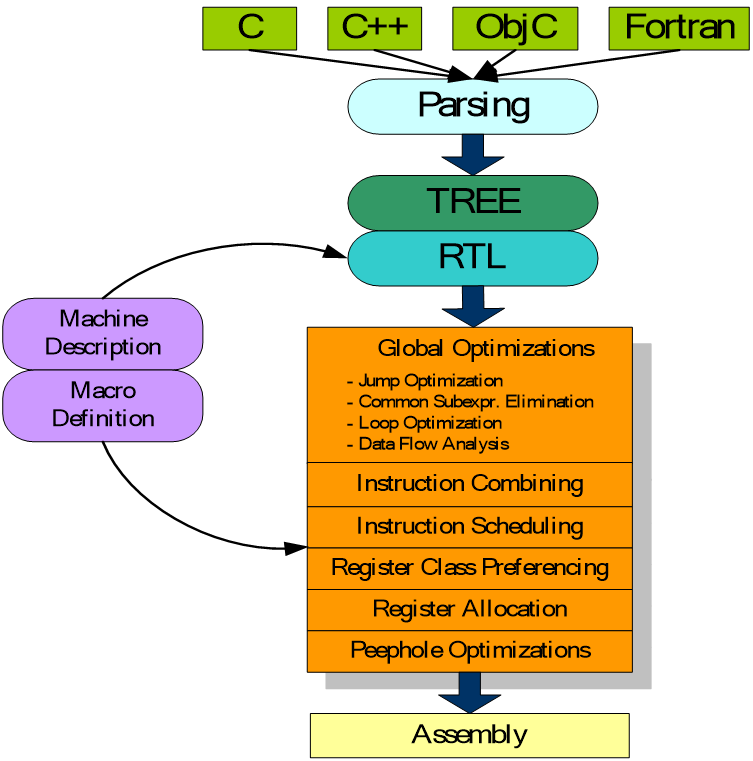 Tool Chain

Compiler
Convert source code to object modules
The Structure of Compiler
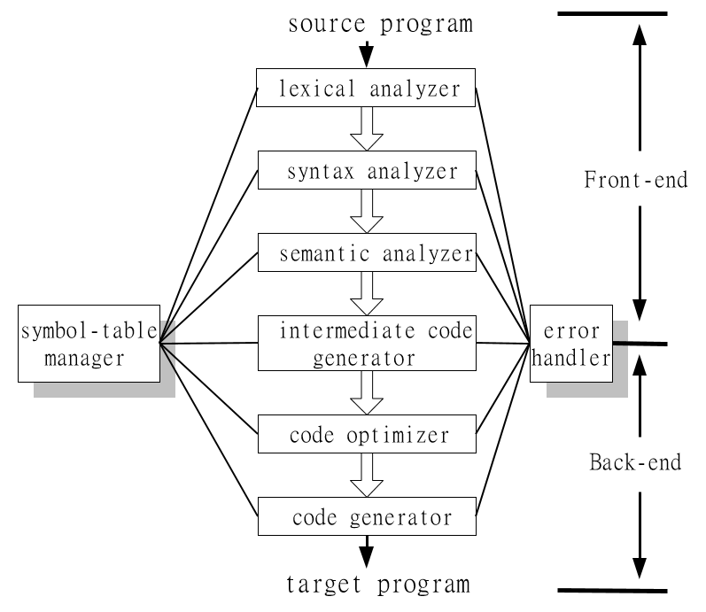 .o: external references not yet resolved
AخA$ nm *.o
Linker
Combine .o and .so into single a.out executable module
see “dl”
xxxxxxxxxx$ ldd a.out
Advanced Topic（Binutils）
xxxxxxxxxx$ gcc –o test.o test.c$ gcc -v -o test.o test.c$ gcc -nostdlib -o test.o test.c$ ldd test.o# Binutils# Lists the symbols defined in an object file.$ nm test.o# The GNU debugger, which can be used to examine the values andactions inside a program while it is running$ gdb test.o# Displays several different kinds of information stored inside one or more object file.$ objdump# Displays information from an ELF formatted object file$ readelf# Removes the symbol table, along with any other information required for debugging$ stripGDB（GNU Project debugger）
run command-line-arguments
Begin execution of your program with arguments
break place
place can be the name of a function or a line number
For example: break main will stop execution at the first instruction of your program
delete N Removes breakpoints, where N is the number of the breakpoint
step Executes current instruction and stops on the next one
next Same as step except this doesn’t step into functions
print E
Prints the value of any variable in your program when you are at a breakpoint, where E is the name of the variable you want to print
help command Gives you more information about any command or all if you leave out command
quit Exit gdb
Core Dump
A program dumps a core memory image into a file called “core” and then exits when it receives certain signals:
- Segmentation fault：accessed memory it does not own often due to a bad pointer or dereferenced a 0 pointer
- Bus error – when malformed instruction is interpreted (often due to a corrupted stack, bad variable alignment, etc.)
GNU Auto Tools
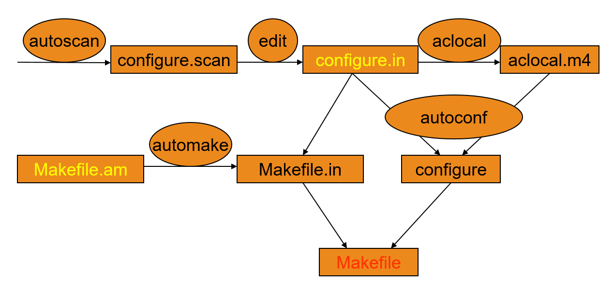 GNU Auto Tools是上个世纪90年代开始发展起来的一系列辅助开发、打安装包的自动化工具
各种工具分别开发，但是协同工作的很好。比如autoconf, automake, libtool等等
autoconf
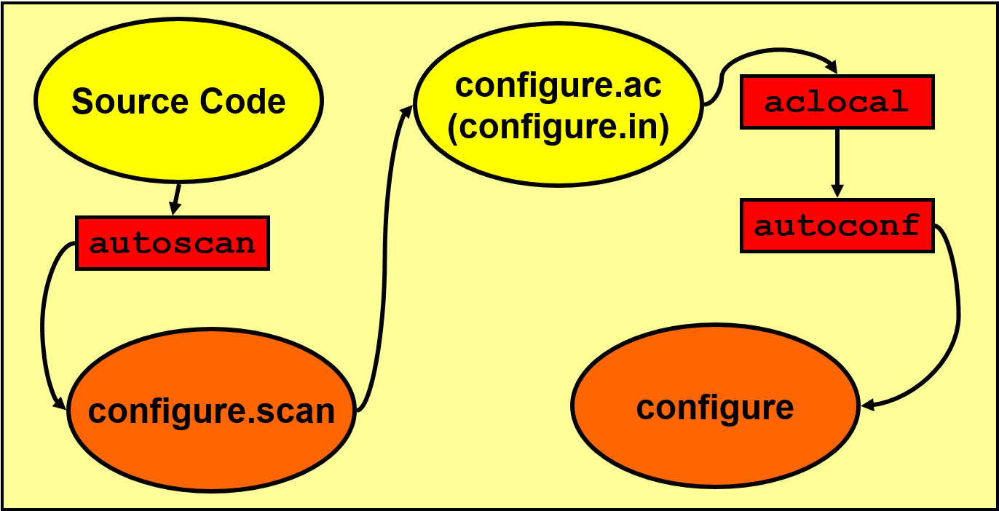 根据用户提供的configure.in文件，生成一个名为configure的脚本。该脚本可以搜集有关移植性的平台相关信息，这些信息被用来生成Makefiles，配置头文件和其它平台相关的文件。
configure.in
- 是configure脚本的输入文件，为了解决在不同unix变种之间移植程序的问题：库名可能不同，应用程序名可能不同，结构和常量的定义可能不同
- configure脚本完成autoconf与automake的初始化工作，为不同的平台定义相应的宏，检测并指定适当的程序名、库名、结构和常量名等等，指定要为哪些目录输出Makefile文件。总之，为编译程序做好一切准备工作。
automake

根据用户提供的一个高层次的生成规则Makefile.am，生成Makefile文件的模板Makefile.in。Automake生成的Makefiles符合GNU的Makefile标准，用户无需再手工编写Makefile文件。
Makefile.am
- 一种比Makefile更高层次的规则。只指定要生成什么目标，它由什么源文件生成，要安装到什么目录。
configure脚本生成的Makefile中已经带了很多常用的目标如：check, all, install, uninstall, clean, dist, distcheck, distclean, tags, maintainerclean.
libtool
生成各种程序库的方便工具。
提供一个统一的接口，程序员不用关心各种烦人的底层细节：不同的平台的库可能要求不同的后缀，不同平台对库的安装方法不同，有些平台不支持动态库等等。
生成高层次的库，称为libtool library，后缀是.la。用它连接时，默认产生动态连接库，也可以用-static参数指定生成静态连接库。
既可单独使用又可与automake和autoconf一起使用更加强大、方便。
在configure.in文件中加上AC_PROG_LIBTOOL宏，如果原来有AC_PROG_RANLIB宏，删去它。
在Makefile.am文件中：
xxxxxxxxxxlib_LTLIBRARIES = libshell.lalibshell_la_SOURCES = object.c subr.c symbol.c与原来的写法非常相似！
.la库只能连入.lo(使用libtool生成的目标文件)
xxxxxxxxxxlibshell_la_LDADD = xmalloc.lo @LTLIBOBJS@传入库的版本号：
xxxxxxxxxxlibshell_la_LDFLAGS = -version-info 1:0:1与其它目标文件连接时用LDFLAGS指定连接的方式(默认是动态方式）：-static, --all-static指定静态连接。
make
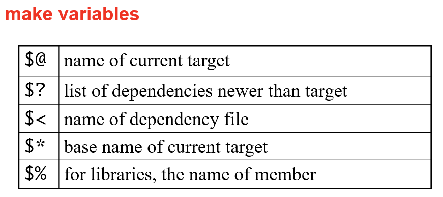
LAB1
LAB1-1 Ubuntu setup and ZyboRobot
xxxxxxxxxx$ ls -al $ env$ echo $PATH$ which gcc$ whereis $ find$ ps -ef$ catLAB1-2 hello world and GNU Tool Chain
Task-1
Write hello world
Compile and use all GNU tools you know to check
Where is crt0 ?
xxxxxxxxxx$ nm /usr/lib/crt1.o"crt" stands for "C runtime", and the zero stands for "the very beginning".
With 1 function call
Dived by 0 in order to create a core dump
Use GDB Trace back the call stack in core dump
From：菜鸟程序员的成长历程~Linux Core Dump
x# 打开 core dump 功能1. 在终端中输入命令 ulimit -c ，输出的结果为 0，说明默认是关闭 core dump 的，即当程序异常终止时，也不会生成 core dump 文件2. 我们可以使用命令 ulimit -c unlimited 来开启 core dump 功能，并且不限制 core dump 文件的大小； 如果需要限制文件的大小，将 unlimited 改成你想生成 core 文件最大的大小，注意单位为 blocks（KB）# 使用 gdb 调试 Core 文件$ gcc core_demo.c -o core_demo -g$ ./core_demo$ gdb core_demo core_demo.core.24816
Task-2
Write Makefile
Hello1.c Hello2.c
Say two hello
Hello world 1 !
Hello world 2 !
Solution:
xxxxxxxxxx// Hello1.cvoid print_Hello1(void){printf("Hello world 1 !\n");}// Hello2.cvoid print_Hello2(void){printf("Hello world 2 !\n");}// hello.cint main(int argc, char* argv[]){print_Hello1();print_Hello2();return 0;}// MakefileTARGET = helloall: $(TARGET)clean:rm -f *.o $(TARGET)hello.o: hello.cHello1.o: Hello1.cHello2.o: Hello2.cOBJ = hello.o Hello1.o Hello2.o$(TARGET): $(OBJ)$(CC) $(CFLAGS) $(LDFLAGS) -o $@ $(OBJ)Task-3：fopen
Open a file
Write into this file
Hello world 1 !
Hello world 2 !
Solution:
xxxxxxxxxx// fopen.c// for exit()int main(int argc, char* argv[]){FILE *fp;if((fp=fopen("./result","w+")) == NULL){printf("Connot open file!\n");exit(1);}char str1[]="Hello world 1 !";char str2[]="Hello world 2 !";// -1 for '\0'fwrite(str1, sizeof(str1)-1, 1, fp);fwrite("\n", 1, 1, fp);fwrite(str2, sizeof(str2)-1, 1, fp);fwrite("\n", 1, 1, fp);fclose(fp);return 0;}// MakefileTARGET = fopenall: $(TARGET)clean:rm -f $(TARGET)OBJ = fopen.c$(TARGET): $(OBJ)$(CC) $(CFLAGS) $(LDFLAGS) -o $@ $(OBJ)
LAB1-3 Explore Embedded Linux

SD卡文件系统：FAT32
SD卡文件内容：./LAB1/ZYBO_SD/*
通过串口putty到ZYBO
Win10（个人感觉体验更好）
- 直接双击putty.exe
- COM6
- 115200
Ubuntu16.04
安装并启动putty
xxxxxxxxxx$ sudo apt-get install putty$ sudo puttycheck dmesg log to see the device node
xxxxxxxxxx$ dmesg[11777.556719] usb 1-2: new high-speed USB device number 13 using xhci_hcd[11777.746450] usb 1-2: New USB device found, idVendor=0403, idProduct=6010[11777.746459] usb 1-2: New USB device strings: Mfr=1, Product=2, SerialNumber=3[11777.746464] usb 1-2: Product: Digilent Adept USB Device[11777.746468] usb 1-2: Manufacturer: Digilent[11777.746472] usb 1-2: SerialNumber: 210279572881[11777.749891] ftdi_sio 1-2:1.0: FTDI USB Serial Device converter detected[11777.750002] usb 1-2: Detected FT2232H[11777.750223] usb 1-2: FTDI USB Serial Device converter now attached to ttyUSB0[11777.753247] ftdi_sio 1-2:1.1: FTDI USB Serial Device converter detected[11777.753371] usb 1-2: Detected FT2232H[11777.753616] usb 1-2: FTDI USB Serial Device converter now attached to ttyUSB1ttyUSB1
115200
挂载/解挂SD卡
xxxxxxxxxx$ fdisk -l$ cd ~ && mkdir sd$ cd sd$ mount /dev/mmcblk0p1 sd/$ umount -l sd/
LAB1-4 Cross Compile
How to install?
Reference：
xxxxxxxxxx# From my xilinx-2011.09-50-arm-xilinx-linux-gnueabi.bin$ chmod a+x xilinx-2011.09-50-arm-xilinx-linux-gnueabi.bin# 此步就是将dash改成bash，安装交叉编译工具链的时候，需要改成bash才行# Select <No>$ sudo dpkg-reconfigure -plow dash$ ./xilinx-2011.09-50-arm-xilinx-linux-gnueabi.bin$ export CROSS_COMPILE=arm-xilinx-linux-gnueabi-$ export PATH=~/CodeSourcery/Sourcery_CodeBench_Lite_for_Xilinx_GNU_Linux/bin:$PATH$ export ARCH=arm# Directly from SDK：https://www.xilinx.com/support/download.html# installing in ~/Xilinx$ ./Xilinx_SDK_2016.4_0124_1_Lin64.bin$ export CROSS_COMPILE=arm-xilinx-linux-gnueabi-$ export PATH=~/Xilinx/SDK/2016.4/gnu/arm/lin/bin:$PATH$ export ARCH=armTask-4：
native-compile
xxxxxxxxxx$ gcc -o helloworld helloworld.c$ ./helloworldcross-compile
xxxxxxxxxx$ ${CROSS_COMPILE}gcc -o helloworld helloworld.c$ ./helloworldbash: ./helloworld: cannot execute binary file: Exec format errorxxxxxxxxxx// MakefileTARGET = helloworldall: $(TARGET)clean:rm -f $(TARGET)OBJ = helloworld.c$(TARGET): $(OBJ)${CROSS_COMPILE}gcc -o $@ $(OBJ)Run on Zybo
xxxxxxxxxx$ make# Copy helloworld to SD card# Puttyroot@zynq:~# cd ~ && mkdir sd# root@zynq:~# fdisk -lroot@zynq:~# mount /dev/mmcblk0p1 sd/root@zynq:~# cd sd/Task-4root@zynq:~/sd/Task-4# lsMakefile helloworld helloworld.croot@zynq:~/sd/Task-4# ./helloworldhello world!
LAB1-5 Kernel Compile
Task-5
extract kernel zip, linux-xlnx-xilinx-v2013.4.zip
cross compile
xxxxxxxxxx# kernel_compile.shexport CROSS_COMPILE=arm-xilinx-linux-gnueabi-export PATH=~/Xilinx/SDK/2016.4/gnu/arm/lin/bin:$PATHexport ARCH=armcd linux-xlnx-xilinx-v2013.4# make config$ make ARCH=arm xilinx_zynq_defconfigHOSTCC scripts/basic/fixdepHOSTCC scripts/kconfig/conf.oHOSTCC scripts/kconfig/zconf.tab.oIn file included from scripts/kconfig/zconf.tab.c:2537:0:scripts/kconfig/menu.c: In function ‘get_symbol_str’:scripts/kconfig/menu.c:586:18: warning: ‘jump’ may be used uninitialized in this function [-Wmaybe-uninitialized]jump->offset = r->len - 1;^scripts/kconfig/menu.c:547:19: note: ‘jump’ was declared herestruct jump_key *jump;^HOSTLD scripts/kconfig/conf## configuration written to .config## make, about 10 minutes$ make ARCH=arm UIMAGE_LOADADDR=0x8000 uImage"mkimage" command not found - U-Boot images will not be built/home/gary/Workspace/git_ws/Courses/ZYBO/LAB1/Task-5/linux-xlnx-xilinx-v2013.4/arch/arm/boot/Makefile:79: recipe for target 'arch/arm/boot/uImage' failedmake[1]: *** [arch/arm/boot/uImage] Error 1/home/gary/Workspace/git_ws/Courses/ZYBO/LAB1/Task-5/linux-xlnx-xilinx-v2013.4/arch/arm/Makefile:305: recipe for target 'uImage' failedmake: *** [uImage] Error 2$ sudo apt install u-boot-tools$ make ARCH=arm UIMAGE_LOADADDR=0x8000 uImageCHK include/config/kernel.releaseCHK include/generated/uapi/linux/version.hCHK include/generated/utsrelease.hmake[1]: 'include/generated/mach-types.h' is up to date.CALL scripts/checksyscalls.shCHK include/generated/compile.hCHK kernel/config_data.hKernel: arch/arm/boot/Image is readyKernel: arch/arm/boot/zImage is readyUIMAGE arch/arm/boot/uImageImage Name: Linux-3.12.0-xilinxCreated: Tue Feb 7 11:52:16 2017Image Type: ARM Linux Kernel Image (uncompressed)Data Size: 3055152 Bytes = 2983.55 kB = 2.91 MBLoad Address: 00008000Entry Point: 00008000Image arch/arm/boot/uImage is ready# hack the kernel$ sublime_text_3 ./arch/arm/kernel/setup.c# The first sentence is “Booting Linux on physical CPU“# Find the first sentence in setup.c, add your name in.$ make ARCH=arm UIMAGE_LOADADDR=0x8000 uImageCHK include/config/kernel.releaseCHK include/generated/uapi/linux/version.hCHK include/generated/utsrelease.hmake[1]: 'include/generated/mach-types.h' is up to date.CALL scripts/checksyscalls.shCHK include/generated/compile.hCC arch/arm/kernel/setup.oLD arch/arm/kernel/built-in.oCHK kernel/config_data.hLINK vmlinuxLD vmlinux.oMODPOST vmlinux.oGEN .versionCHK include/generated/compile.hUPD include/generated/compile.hCC init/version.oLD init/built-in.oKSYM .tmp_kallsyms1.oKSYM .tmp_kallsyms2.oLD vmlinuxSORTEX vmlinuxSYSMAP System.mapOBJCOPY arch/arm/boot/ImageKernel: arch/arm/boot/Image is readyGZIP arch/arm/boot/compressed/piggy.gzipAS arch/arm/boot/compressed/piggy.gzip.oLD arch/arm/boot/compressed/vmlinuxOBJCOPY arch/arm/boot/zImageKernel: arch/arm/boot/zImage is readyUIMAGE arch/arm/boot/uImageImage Name: Linux-3.12.0-xilinxCreated: Tue Feb 7 11:54:49 2017Image Type: ARM Linux Kernel Image (uncompressed)Data Size: 3055088 Bytes = 2983.48 kB = 2.91 MBLoad Address: 00008000Entry Point: 00008000Image arch/arm/boot/uImage is readytest on zybo
Copy uImage to SD card
Find hacked print info
xxxxxxxxxxroot@zynq:~# dmesg | head -n 20Durant35: Booting Linux on physical CPU 0x0Linux version 3.12.0-xilinx (gary@gary-ThinkPad-T460) (gcc version 4.9.2 (Sourcery CodeBench Lite 2015.05-17) ) #2 SMP PREEMPT Tue Feb 7 11:54:46 CST 2017CPU: ARMv7 Processor [413fc090] revision 0 (ARMv7), cr=18c5387dCPU: PIPT / VIPT nonaliasing data cache, VIPT aliasing instruction cacheMachine: Xilinx Zynq Platform, model: Xilinx Zynq Platformbootconsole [earlycon0] enabledMemory policy: Data cache writeallocOn node 0 totalpages: 131072free_area_init_node: node 0, pgdat c05c3e40, node_mem_map c05fb000Normal zone: 1024 pages used for memmapNormal zone: 0 pages reservedNormal zone: 131072 pages, LIFO batch:31PERCPU: Embedded 8 pages/cpu @c0a02000 s8384 r8192 d16192 u32768pcpu-alloc: s8384 r8192 d16192 u32768 alloc=8*4096pcpu-alloc: [0] 0 [0] 1Built 1 zonelists in Zone order, mobility grouping on. Total pages: 130048Kernel command line: console=ttyPS0,115200 root=/dev/ram rw earlyprintkPID hash table entries: 2048 (order: 1, 8192 bytes)Dentry cache hash table entries: 65536 (order: 6, 262144 bytes)Inode-cache hash table entries: 32768 (order: 5, 131072 bytes)root@zynq:~#
Day02
Process and User Space
Object File Format
a.out Object File Format
elf Object File Format
- Linux "Executable" ELF files
-
Static Library & Dynamic Shared Library
- Static Library
- Dynamic Shared Library
Inter Process Communication
Shells
Bourne shell (sh)
C Shell (csh)
Korn shell (ksh)
Bash Shell (bash)
Other Shells
- rc – replacement for sh on Plan 9
- ash, Almquist shell, A Shell – clone for BSD of much of Bourne shell
- dash – Debian Almquist shell, faster then bash, but no extensions (no “bashisms”)
- esh – Easy Shell, Lisp based
- scsh – Scheme shell
- sash – Standalone shell, no reliance on external libraries
- zsh – Z Shell extension of Bourne shell
The Common Gateway Interface
Linux发行版的派系
-
/proc
-
strace 显示任何由用户空间发出的系统调用
POSIX API
Frequently needed functions
- int open( char *fname, int flags, … )
- int read( int fd, char *buf, int count )
- Serial Port Programming
- Unix Serial Devices and Communication
Introduction to Embedded System Design using Zynq
Objectives
- Define a Zynq All Programmable SoC (AP SoC) processor component
- Enumerate（列举） the key aspects of the Zynq AP SoC processing system
- Describe the embedded design flow
- Understand the function of the IP Integrator tool（IP集成器工具）
- Indicate（指出） how the hardware design is linked to the software development environment
Embedded Processor Component
Embedded design with Zynq is based on:
Processor and peripherals
- Dual ARM® Cortex™ -A9 processors of Zynq-7000 AP SoC
- AXI interconnect（互联总线）
- AXI component peripherals（外设组件）
- Reset, clocking, debug ports
Software platform for processing system
- Bare Metal Applications or OS’s (e.g. Linux, FreeRTOS) （裸机应用程序/操作系统）
- C language support
- Processor services
- C drivers for hardware
User application
- Interrupt service routines (optional)（中断服务程序）

The Zynq-7000 AP SoC architecture consists of two major sections
PS: Processing System
- Dual ARM Cortex-A9 processor based
- Multiple peripherals
- Hard silicon core
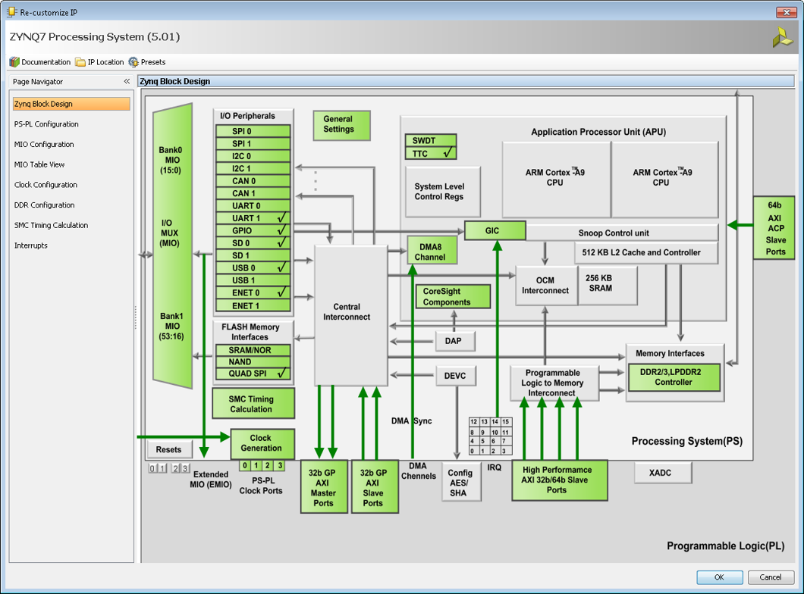 The Zynq AP SoC processing system consists of the following blocks：
Application processing unit (APU)
I/O peripherals (IOP)
- Multiplexed I/O (MIO), extended multiplexed I/O (EMIO)
Memory interfaces
PS interconnect
DMA
Timers
- Public and private
General interrupt controller (GIC)
On-chip memory (OCM): ROM and RAM
Debug controller: CoreSight
PL: Programmable Logic
Uses the same 7 series programmable logic：
- Artix™-based devices: Z-7010, Z-7015 and Z-7020 (high-range I/O banks only)
- Kintex™-based devices: Z-7030, Z-7045, and Z-7100 (mix of high-range and high-performance I/O banks)
Overview of Vivado for Embedded Design
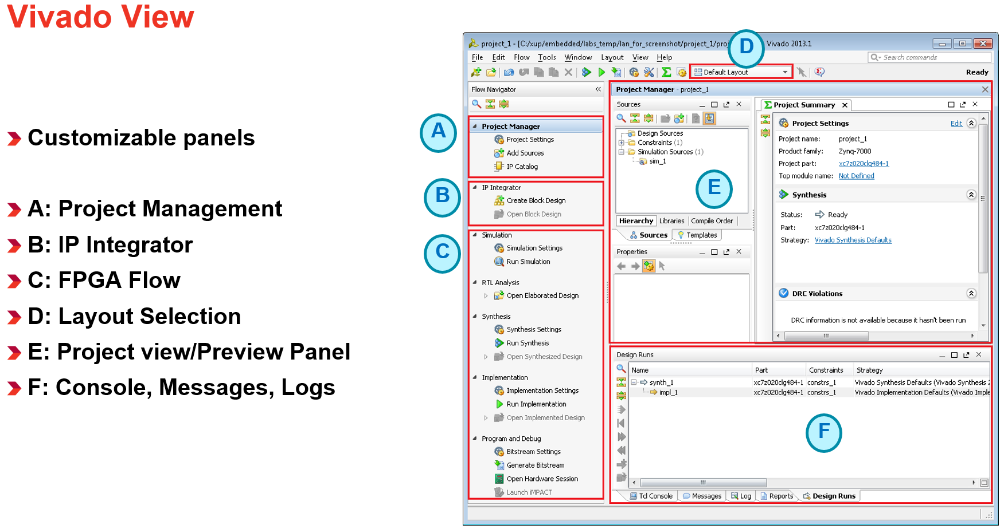 What are Vivado, IP Integrator and SDK?
Vivado is the tool suite for Xilinx FPGA design and includes capability for embedded system design
IP Integrator, is part of Vivado and allows block level design of the hardware part of an Embedded system
- Integrated into Vivado
Vivado includes all the tools, IP, and documentation that are required for designing systems with the Zynq-7000 AP SoC hard core and/or Xilinx MicroBlaze soft core processor
Vivado+IPI replaces ISE/EDK
SDK is an Eclipse-based software design environment
- Enables the integration of hardware and software components
- Links from Vivado
Hardware Design

Hardware development tools
IP Integrator
IP Packager
Hardware netlist generation
Simulation model generation
Xilinx Microprocessor Debugger (XMD)
Hardware debugging using Vivado analyzer
Vivado/IP Integrator
- Design environment for configuration of PS, and hardware design for PL
- Hardware Platform (xml)
- Platform, software, and peripheral simulation
- Vivado logic analyzer integration
Software Design
Software Development Kit (SDK)
- Project workspace
- Hardware platform definition
- Board Support Package (BSP)
- Software application
- Software debugging
Eclipse IDE-based Software Development Kit (SDK)
- Board support package creation
- GNU software development tools
- C/C++ compiler for the MicroBlaze and ARM Cortex-A9 processors (gcc)
- Debugger for the MicroBlaze and ARM Cortex-A9 processors (gdb)
- TCF framework – multicore debug
Board support packages (BSPs)
Stand-alone BSP
- Free basic device drivers and utilities from Xilinx
- NOT an RTOS
Embedded System Development Flow


Add IP Integrator Block Diagram
Configuring Hardware in IP Integrator
- Exporting to SDK
- Software Development Flow
- Configuring FPGA and Downloading Application
Hardware Platform Creation
Provides a graphical view of the PS to configure
- ARM cores
- I/O peripherals
- DDR controller
- Memory systems
Clock Configuration
Input frequency can be set
- Processor, DDR
All IOP clock frequencies can be set
Clock to PL configuration
Set Timers
SDK Software Platform
<center><img src="./img/day02/SDK_Workbench.png" width="640px"/></center>
Summary
- Vivado includes all the tools, documentation, and IP necessary for building embedded systems
- IPI is a System Level design tool that increases productivity, allowing designs to be completed faster
- An embedded processing system component is built with IP provided in the IP Catalog. Designers can also add their own custom IP to this catalog
- The PS Configuration wizard permits access to several configurable features of PS
- The Software Development Kit (SDK) is a comprehensive software development environment for software applications
Zynq Architecture
Objectives
- Identify the basic building blocks of the Zynq™ architecture processing system (PS)
- Describe the usage of the Cortex-A9 processor memory space
- Connect the PS to the programmable logic (PL) through the AXI ports
- Generate clocking sources for the PL peripherals（PL外设）
- List the various AXI-based system architectural models（基于AXI）
- Name the five AXI channels（AXI通道）
- Describe the operation of the AXI streaming protocol（AXI流协议）
Zynq All Programmable SoC (AP SoC)

Zynq AP SoC Processing System (PS)
ARM Cortex-A9 Processor Micro-Architecture

PS Components
Application processing unit (APU)
I/O peripherals (IOP)
- Multiplexed I/O (MIO), extended multiplexed I/O (EMIO)
Memory interfaces
PS interconnect
DMA
Timers
- Public and private
General interrupt controller (GIC)
On-chip memory (OCM): RAM
Debug controller: CoreSight
Processing System Interconnect

Programmable Logic to memory
- Two ports to DDR
- One port to OCM SRAM
Central interconnect
- Enables other interconnects to communicate
Peripheral master
- USB, GigE, SDIO connects to DDR and PL via the central interconnect
Peripheral slave
- CPU, DMA, and PL access to IOP peripherals
Processing System master
- Two ports from the Processing System to Programmable Logic
- Connects the CPU block to common peripherals through the central interconnect
Processing System slave
- Two ports from Programmable Logic to the Processing System
Memory Map

- The Cortex-A9 processor uses 32-bit addressing
- All PS peripherals and PL peripherals are memory mapped to the Cortex-A9 processor cores
- All slave PL peripherals will be located between 4000_0000 and 7FFF_FFFF (connected to GP0) and 8000_0000 and BFFF_FFFF (connected to GP1)
Memory Resources
On-chip memory (OCM)
- RAM
- Boot ROM
DDRx dynamic memory controller
- Supports LPDDR2, DDR2, DDR3
Flash/static, memory controller
- Supports SRAM, QSPI, NAND/NOR FLASH
PS Boots First
CPU0 boots from OCM ROM; CPU1 goes into a sleep state
On-chip boot loader in OCM ROM (Stage 0 boot)
Processor loads First Stage Boot Loader (FSBL) from external flash memory
- NOR
- NAND
- Quad-SPI
- SD Card
- JTAG; not a memory device—used for development/debug only
- Boot source selected via package bootstrapping pins
Optional secure boot mode allows the loading of encrypted software from the flash boot memory
Configuring the PL
The Programmable Logic is configured after the PS boots
Performed by application software accessing the hardware device configuration unit
- Bitstream image transferred
- 100-MHz, 32-bit PCAP stream interface
- Decryption/authentication hardware option for encrypted bitstreams
- In secure boot mode, this option can be used for software memory load
- Built-in DMA allows simultaneous PL configuration and OS memory loading
Processor Peripherals
Input/Output Peripherals

Two GigE
Two USB
Two SPI
Two SD/SDIO
Two CAN
Two I2C
Two UART
Four 32-bit GPIOs
Static memories
- NAND, NOR/SRAM, Quad SPI
Trace ports
Multiplexed I/O (MIO)

54 dedicated package pins available
Software configurable
- Automatically added to bootloader by tools
Not available for all peripheral ports
- Some ports can only use EMIO
Extended Multiplexed I/O (EMIO)

EMIO: Peripheral port to Programmable Logic
Alternative to using MIO
Mandatory（必需） for some peripheral ports
Facilitates（便利）
- Connection to peripheral in programmable logic
- Use of general I/O pins to supplement MIO pin usage
- Alleviates competition（缓解竞争） for MIO pin usage
PS-PL Interfaces

AXI high-performance slave ports (HP0-HP3)
- Configurable 32-bit or 64-bit data width
- Access to OCM and DDR only
- Conversion to processing system clock domain
- AXI FIFO Interface (AFI) are FIFOs (1KB) to smooth large data transfers
AXI general-purpose ports (GP0-GP1)
- Two masters from PS to PL
- Two slaves from PL to PS
- 32-bit data width
- Conversation and sync to processing system clock domain
Clock, Reset, and Debug Features

AXI Interfaces
AXI is Part of ARM’s AMBA


AXI
- Basic AXI Signaling – 5 Channels
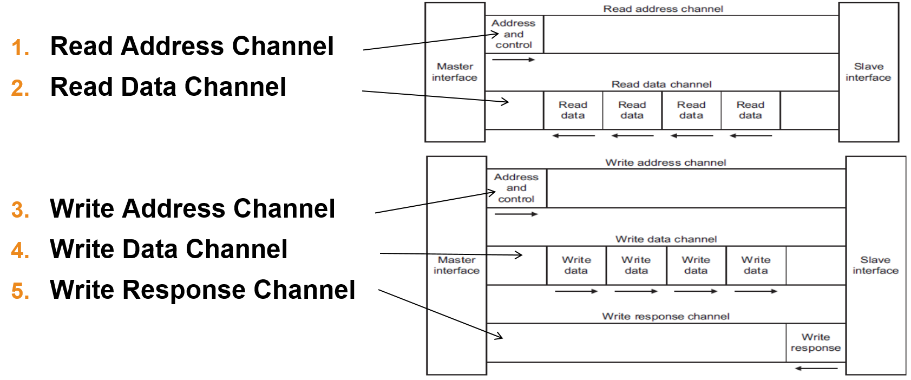 - The AXI Interface—AX4-Lite
- The AXI Interface—AXI4
- The AXI Interface—AXI4-Stream
LAB2
Lab2-1 Create an Embedded System
How to install Xilinx Vivado with SDK？
写在前头的总结
- 下面几个步骤是在Ubuntu16.04上搭建开发环境，过程还算简单，不过会出现设备识别不了的问题。
2016.4更是因为安装包本身的bug，在SDK中无法Run on Hardware；即使是换成2016.1（目前还没发现2016.4的bug），也会出现串口无法正常操作，导致helloworld范例无法正常运行（应该是安装包对Linux兼容不好，没有考虑有关串口的权限问题）。 - 最后，建议直接在Windows上搭建开发环境，从官网下载
Xilinx_Vivado_SDK_2016.1_0409_1_Win64.exe，双击即可安装（最新的2016.4的Windows版本同样有bug，后来发现，2014.4就行了，太新很多源码都不支持了）。 - 我的开发环境：Vmware装了Win10虚拟机，host是Ubuntu16.04，配置了交叉编译环境
- 下面几个步骤是在Ubuntu16.04上搭建开发环境，过程还算简单，不过会出现设备识别不了的问题。
从官网下载，获取到
Xilinx_Vivado_SDK_2016.4_0124_1_Lin64.bin，下载前需要注册账号。安装（这一步比较耗时，差不多一个钟）
xxxxxxxxxx$ chmod a+x Xilinx_Vivado_SDK_2016.4_0124_1_Lin64.bin# 建议通过sudo方式安装，安装默认路径是/opt/Xilinx$ sudo ./Xilinx_Vivado_SDK_2016.4_0124_1_Lin64.binYou may need to install the digilent cable drivers
xxxxxxxxxx# 确保已经拔掉ZYBOcd /opt/Xilinx/Vivado/2016.4/data/xicom/cable_drivers/lin64/install_script/install_driverssudo ./install_driversreboot启动
Reference: Running Vivado on Linux (Ubuntu)
xxxxxxxxxx# 通过echo "source /opt/Xilinx/Vivado/2016.4/settings64.sh" >> ~/.bashrc，将变成bash默认环境$ source /opt/Xilinx/Vivado/2016.4/settings64.sh$ vivado &****** Vivado v2016.4 (64-bit)**** SW Build 1756540 on Mon Jan 23 19:11:19 MST 2017**** IP Build 1755317 on Mon Jan 23 20:30:07 MST 2017** Copyright 1986-2016 Xilinx, Inc. All Rights Reserved.start_gui
Step by step（Hardware）

Create New Project
- Click next …… 6 times

Select Zynq-7000
- Click next, then … finish

Create Block Diagram design_1

Add IP： ZYNQ7 Processing System

Zybo config（双击processing_system7_0）

Import XPS settings，./LAB2/Task-1/ZYBO_zynq_def.xml，OK
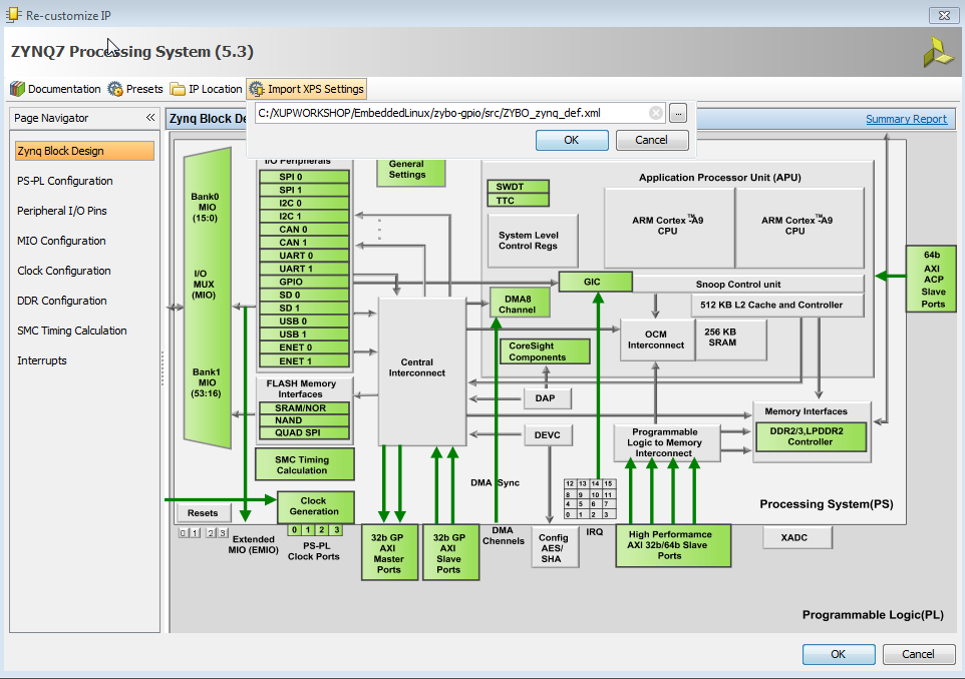 Run Block Automation 完成PS接口
Add IP: AXI_GPIO

GPIO as Dual Channel, 4 bit
双击 axi_gpio_0
- Enable Dual Channel
- GPIO Width：4

Run Connection Automation for all，然后通过Regenerate Layout自动调整模块布局，通过Validate Design进行初步验证。
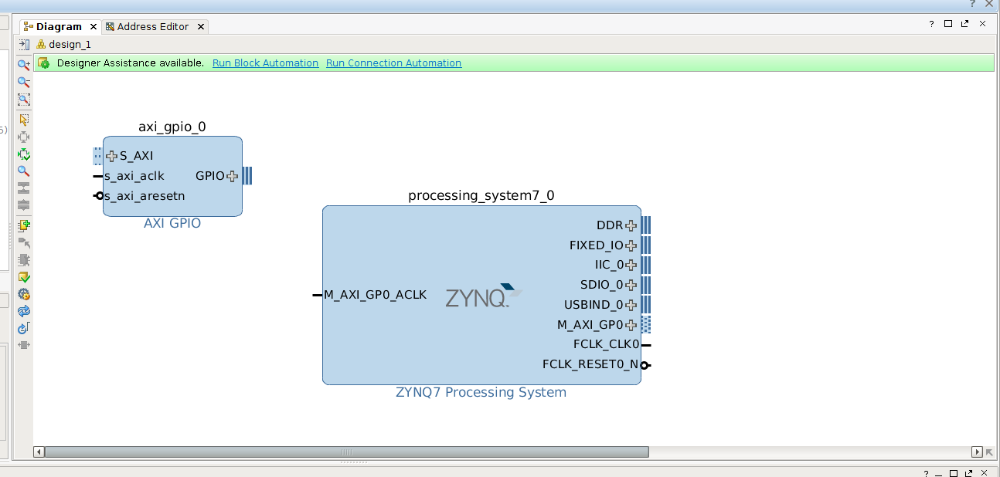 Add constrain，./LAB2/Task-1/ZYBO_Master.xdc，Finish
- Add Sources->Add or create constraints

Create HDL Wrapper
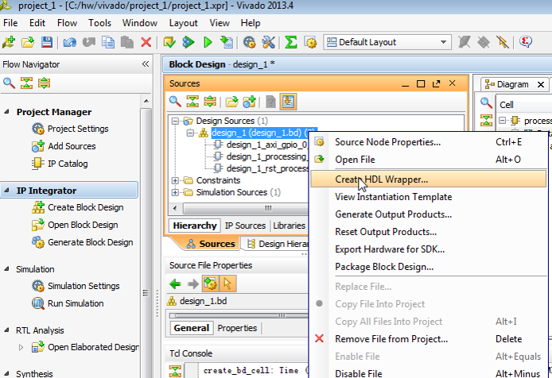 Generate Bitstream，
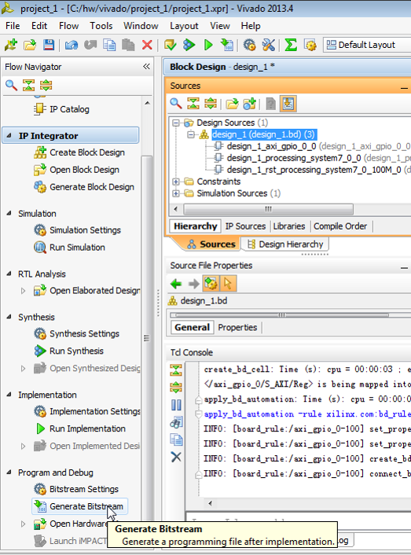 10 minutes later ……
<project-name>/<project-name>.runs/impl_1- design_1_wrapper.bit
Step by step（Software）
How to Install Xilinx SDK
没错，Linux下还需要额外配置才能正常启动SDK，Windows则一步自动到位。
Install JRE for eclipse
xxxxxxxxxx$ sudo apt-get install default-jre配置环境
xxxxxxxxxx# echo "source /opt/Xilinx/SDK/2016.4/settings64.sh" >> ~/.bashrc$ source /opt/Xilinx/SDK/2016.4/settings64.sh# echo "export SWT_GTK3=0" >> ~/.bashrc# 没有这一步，无法在Vivado中Launch SDK$ export SWT_GTK3=0
Export to SDK
- 启动 Vivado，在其中 File->Launch SDK

New application project
File->Application Project->Next->Hello World
- Hardware platform：从Vivado导出的hw_platform（default）
- Processor platform：ps7_contexa9_0（default）
- OS platform：standalone

Modify helloworld.c , add your name

How to connect？


+ 21 Programming Mode Jumper：FPGA模式 + 18 板上电源指示灯 + 19 PL配置完成指示灯，Program FPGA正常的话，指示灯会亮 + Vivado->Flow->Hardware Manager验证设备成功连接 + Detect **xc_7z010**
配置FPGA：
Xilinx Tools->Program FPGA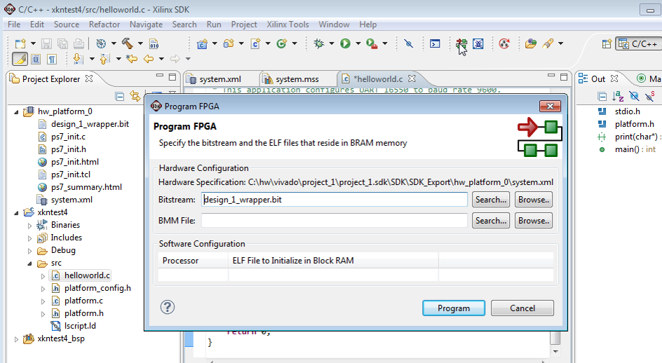 Run it
<center><img src="./img/Lab2_1/run_it.png" width="480px"/></center>
下面是我使用的
helloworld.cxxxxxxxxxx/** helloworld.c: simple test application** This application configures UART 16550 to baud rate 9600.* PS7 UART (Zynq) is not initialized by this application, since* bootrom/bsp configures it to baud rate 115200** ------------------------------------------------* | UART TYPE BAUD RATE |* ------------------------------------------------* uartns550 9600* uartlite Configurable only in HW design* ps7_uart 115200 (configured by bootrom/bsp)*/int main(){init_platform();while(1){print("Hello World\n\r");}cleanup_platform();return 0;}- 正常使用的应该是USB转串口，即
PS7 UART (Zynq)，应该是在硬件设计过程中通过Import XPS Settings对PS上的串口进行了配置。
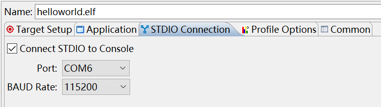 - 一切正常，SDK的Console会一直打印
Hello World，ZYBO板上的串口状态指示灯Rx会常亮。
- 正常使用的应该是USB转串口，即
Read IP document
IP documentation

Programming
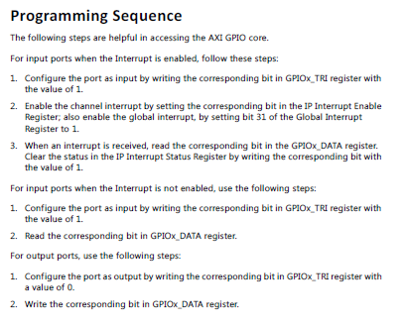 Figure out the address，
axi_gpio_0基地址为：0x41200000
GPIO programing without BSP
ZYBOLED和Switch管脚原理图如下。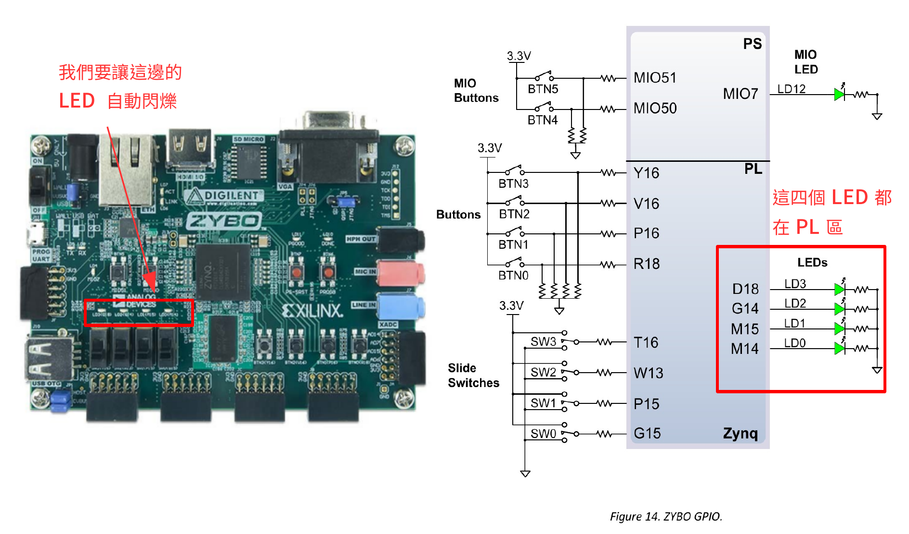 关于LED和Switch的管脚设计及约束文件如下图。

Switches control LEDs lighting up
xxxxxxxxxxint main(){init_platform();// Switchesint* gpio_chn0_base_ptr = (int*)0x41200000;int* gpio_chn0_tri_mode_ptr = gpio_chn0_base_ptr + 1;// LEDsint* gpio_chn1_base_ptr = gpio_chn0_base_ptr + 2;int* gpio_chn1_tri_mode_ptr = gpio_chn0_base_ptr + 3;// Switches as input ports*gpio_chn0_tri_mode_ptr = 0xF;// LEDs as output ports*gpio_chn1_tri_mode_ptr = 0x0;printf("Switches Control LEDs Lighting Up\n\r");int val, delay;while(1){val = *gpio_chn0_base_ptr;printf("Switch is %x\n", val);*gpio_chn1_base_ptr = val;printf("LED is %x\n",val);for(delay=0;delay<DELAY;delay++);}cleanup_platform();return 0;}
Xilinx Tools->Program FPGARun As->Launch on Hardware(GDB)
强烈建议在Windows下进行上述开发（本人在Ubuntu16.04下面弄了4天，连个hello world都出现许多问题，最终选择放弃）
直接开发 FPGA（PL）：zybo board 開發記錄: 透過可程式邏輯控制 LED 閃爍
- Vivado开发生成 .bit FPGA配置文件
- Hardware Manager -> Program device
软硬件协同开发（配置 PL 后，PS 通过 AXI 控制 PL）：zybo board 開發記錄: Zynq 與 LED 閃爍控制
- Vivado开发生成 .bit FPGA配置文件
- Export Hardware .bit to SDK
- Launch SDK，基于上述开发的硬件平台开发Application
- Program FPGA（.bit）
- Run Application（.elf）on Hardware
Lab2-2 Bootloader
Create Boot Image

What files needed？
Output BIF file path&Output pathfor BOOT.binBoot image partitions->AddAdd ./LAB2/Task-2/fsbl.elf as
bootloader
Add bitstream *.bit（generated in Lab2_1） as datafile

Add U-boot（./LAB2/Task-2/u-boot.elf） as data file

Create Image

Copy BOOT.bin to SD card
- Programming Mode Jumper：SD卡模式
- 格式化你的SD卡
- 将创建的BOOT.bin拷贝到SD卡
Test the GPIO bitstream works
putty
help for u-boot command
xxxxxxxxxxzynq-uboot> help? - alias for 'help'base - print or set address offsetbdinfo - print Board Info structureboot - boot default, i.e., run 'bootcmd'bootd - boot default, i.e., run 'bootcmd'bootelf - Boot from an ELF image in memorybootm - boot application image from memorybootp - boot image via network using BOOTP/TFTP protocolbootvx - Boot vxWorks from an ELF imagebootz - boot Linux zImage image from memoryclk - CLK sub-systemcmp - memory compareconinfo - print console devices and informationcp - memory copycrc32 - checksum calculationdcache - enable or disable data cacheecho - echo args to consoleeditenv - edit environment variableenv - environment handling commandsexit - exit scriptext2load- load binary file from a Ext2 filesystemext2ls - list files in a directory (default /)false - do nothing, unsuccessfullyfatinfo - print information about filesystemfatload - load binary file from a dos filesystemfatls - list files in a directory (default /)fdt - flattened device tree utility commandsfpga - loadable FPGA image supportgo - start application at address 'addr'help - print command description/usageicache - enable or disable instruction cacheiminfo - print header information for application imageimxtract- extract a part of a multi-imageitest - return true/false on integer compareloadb - load binary file over serial line (kermit mode)loads - load S-Record file over serial lineloadx - load binary file over serial line (xmodem mode)loady - load binary file over serial line (ymodem mode)loop - infinite loop on address rangemd - memory displaymdio - MDIO utility commandsmii - MII utility commandsmm - memory modify (auto-incrementing address)mmc - MMC sub systemmmcinfo - display MMC infomw - memory write (fill)nfs - boot image via network using NFS protocolnm - memory modify (constant address)ping - send ICMP ECHO_REQUEST to network hostprintenv- print environment variablesreset - Perform RESET of the CPUrun - run commands in an environment variablesaveenv - save environment variables to persistent storagesetenv - set environment variablessf - SPI flash sub-systemshowvar - print local hushshell variablessleep - delay execution for some timesource - run script from memorysspi - SPI utility commandtest - minimal test like /bin/shtftpboot- boot image via network using TFTP protocoltrue - do nothing, successfullyversion - print monitor, compiler and linker versionzynq-uboot>LED test
Switches address：0x41200000
LEDs address：0x41200008
xxxxxxxxxxzynq-uboot> md 41200000# switches_base_ptr switches_tri_mode_ptr leds_base_ptr leds_tri_mode_ptr# 41200000 41200004 41200008 4120000c41200000: 00000008 0000000f 00000008 0000000f ................41200010: 00000008 0000000f 00000008 0000000f ................41200020: 00000008 0000000f 00000008 0000000f ................41200030: 00000008 0000000f 00000008 0000000f ................41200040: 00000008 0000000f 00000008 0000000f ................41200050: 00000008 0000000f 00000008 0000000f ................41200060: 00000008 0000000f 00000008 0000000f ................41200070: 00000008 0000000f 00000008 0000000f ................41200080: 00000008 0000000f 00000008 0000000f ................41200090: 00000008 0000000f 00000008 0000000f ................412000a0: 00000008 0000000f 00000008 0000000f ................412000b0: 00000008 0000000f 00000008 0000000f ................412000c0: 00000008 0000000f 00000008 0000000f ................412000d0: 00000008 0000000f 00000008 0000000f ................412000e0: 00000008 0000000f 00000008 0000000f ................412000f0: 00000008 0000000f 00000008 0000000f ................zynq-uboot>- 从上面可以看出，所有gpio默认都是输入
通过指令点亮LED
xxxxxxxxxxzynq-uboot> nm 4120000c# 将led对应的gpio设置为输出4120000c: 0000000f ? 04120000c: 00000000 ? q# 操作值寄存器，控制ledszynq-uboot> nm 4120000841200008: 00000000 ? 141200008: 00000001 ? 241200008: 00000002 ? 341200008: 00000003 ? 441200008: 00000004 ? 541200008: 00000005 ? f41200008: 0000000f ? qzynq-uboot>- 地址4个字节对齐，nm指令地址不符合对齐条件，系统会自动重启
Build your U-boot
Step by step
xxxxxxxxxx# 配置交叉编译环境（最新的交叉编译环境都集成在Vivado SDK中）$ source /opt/Xilinx/SDK/2016.1/settings64.sh$ export CROSS_COMPILE=arm-xilinx-linux-gnueabi-$ export ARCH=arm# Extract ./LAB2/Task-3/u-boot-Digilent-Dev-master.zip$ unzip u-boot-Digilent-Dev-master.zip -d .$ cd u-boot-Digilent-Dev-master/$ make zynq_zybo_config$ make# modify common/main.c# Modify printf(“Hit any key to YOU NAME stop autoboot: %2d”, bootdelay);$ vim common/main.c$ make# just rename operation$ cp ./u-boot u-boot.elfCreate Zynq Boot Image
- Use the above u-boot.elf with your name
Copy BOOT.bin to SD card
xxxxxxxxxxzynq-uboot> nm 100000001:data abortMAYBE you should read doc/README.arm-unaligned-accessespc : [<1ff7c684>] lr : [<1ff7c674>]sp : 1fb54e18 ip : 00000030 fp : 1fb59fb8r10: 00000000 r9 : 1ffaf464 r8 : 1fb54f48r7 : 1ffaf468 r6 : 00000000 r5 : 00000004 r4 : 00000001r3 : e0001000 r2 : 00000802 r1 : 00000001 r0 : 1ffa6767Flags: nZCv IRQs off FIQs off Mode SVC_32Resetting CPU ...resetting ...U-Boot 2013.10 (Feb 10 2017 - 15:36:21)Memory: ECC disabledDRAM: 512 MiBMMC: zynq_sdhci: 0SF: Detected S25FL128S_64K with page size 256 Bytes, erase size 64 KiB, total 16 MiB*** Warning - bad CRC, using default environmentIn: serialOut: serialErr: serialNet: Gem.e000b000Warning: failed to set MAC address# Here!!!!Hit any key to Durant35 stop autoboot: 0Device: zynq_sdhciManufacturer ID: 3OEM: 5344Name: SL08GTran Speed: 50000000Rd Block Len: 512SD version 3.0High Capacity: YesCapacity: 7.4 GiBBus Width: 4-bitreading uEnv.txt** Unable to read file uEnv.txt **Copying Linux from SD to RAM...reading uImage** Unable to read file uImage **zynq-uboot>
Hack U-boot
Hack
./common/cmd_fpga.c, add case 1:
GPIO programing without BSP
Initialization
Config in and out
xxxxxxxxxxint do_fpga(cmd_tbl_t *cmdtp, int flag, int argc, char *const argv[]){int op, dev = FPGA_INVALID_DEVICE;size_t data_size = 0;void *fpga_data = NULL;char *devstr = getenv("fpga");char *datastr = getenv("fpgadata");int rc = FPGA_FAIL;int wrong_parms = 0;const char *fit_uname = NULL;ulong fit_addr;/* initialization */// Switchesint* gpio_chn0_base_ptr = (int*)0x41200000;int* gpio_chn0_tri_mode_ptr = gpio_chn0_base_ptr + 1;// LEDsint* gpio_chn1_base_ptr = gpio_chn0_base_ptr + 2;int* gpio_chn1_tri_mode_ptr = gpio_chn0_base_ptr + 3;/* Config in and out */// Switches as input ports*gpio_chn0_tri_mode_ptr = 0xF;// LEDs as output ports*gpio_chn1_tri_mode_ptr = 0x0;int val, delay;if (devstr)......Read 8 switchs
LED light up
xxxxxxxxxxcase 2: /* fpga <op> */op = (int)fpga_get_op(argv[1]);break;case 1: /* hack U-boot */printf("hacked U-boot\n\r");/* Read switches */val = *gpio_chn0_base_ptr;printf("switch is %x\n", val);for(delay=0;delay<DELAY;delay++);/* LEDs light up */val = 0x55;*gpio_chn1_base_ptr = val;printf("LED is %x\n", val);for(delay=0;delay<DELAY;delay++);val = 0xaa;*gpio_chn1_base_ptr = val;printf("LED is %x\n", val);for(delay=0;delay<DELAY;delay++);break;default:debug("%s: Too many or too few args (%d)\n", __func__, argc);op = FPGA_NONE; /* force usage display */break;}
Make
xxxxxxxxxx$ make$ cp ./u-boot u-boot.elfCreate Zynq Boot Image
Copy
./LAB2/Task-4/BOOT.binto SD cardTest it by type in fpga
xxxxxxxxxxzynq-uboot> fpgahacked U-bootswitch is fLED is 55LED is aaFPGA device not specifiedfpga - loadable FPGA image supportUsage:fpga [operation type] [device number] [image address] [image size]fpga operations:dump [dev] Load device to memory bufferinfo [dev] list known device informationload [dev] [address] [size] Load device from memory bufferloadb [dev] [address] [size] Load device from bitstream buffer (Xilinx only)loadmk [dev] [address] Load device generated with mkimageFor loadmk operating on FIT format uImage address must includesubimage unit name in the form of addr:<subimg_uname>zynq-uboot>
Lab2-3 Using device driver
Copy
/LAB2/Task-5/*to SD card- SD image with AXI_GPIO，4 LED，4 Switch
LED device test
xxxxxxxxxxzynq> cd sys/class/gpiozynq> lsexport gpiochip0 gpiochip248 gpiochip252 unexportzynq> echo 252 > exportzynq> lsexport gpio252 gpiochip0 gpiochip248 gpiochip252 unexport# LED-0为输出管脚zynq> echo out > gpio252/direction# 点亮LED-0zynq> echo 1 > gpio252/value# 灭掉LED-0zynq> echo 0 > gpio252/value# 253~255对应于LED-1~LED-3Switch test
xxxxxxxxxxzynq> echo 248 > exportzynq> echo in > gpio248/direction# SW-0上拨zynq> cat ./gpio248/value1# SW-0下拨zynq> cat ./gpio248/value0# 249~251对应于SW-1~SW-3使用脚本实现跑马灯
xxxxxxxxxxzynq> for io_num in $(seq 252 255)> do> echo $io_num > export> echo out > gpio$io_num/direction> done;zynq> for k in $(seq 1 1000)> do> for io_num in $(seq 252 255)> do> echo 1 > gpio$io_num/value> sleep 10ms> echo 0 > gpio$io_num/value> done> done;
Lab2-4 Make SD Card
Refer to Booting Linux on the ZYBO
新建分区与格式化
xxxxxxxxxx$ mkfs -t vfat /dev/sdb1$ sudo dosfslabel /dev/sdb1 boot$ mkfs.ext4 /dev/sdb2$ e2label /dev/sdb2 fsCopy image to partitions
xxxxxxxxxx$ tar -zxf ./LAB2/Task-6/zr_boot.8_11.tar.gz$ rsync -a zr_boot/* /media/gary/boot$ sync$ sudo tar -zxf ./LAB2/Task-6/zr_fs.8_11.tar.gz$ sudo rsync -a zr_fs/* /media/gary/fs$ sync可能需要设置U-boot环境参数，让 U-boot 完成 Kernel 初始化后去加载SD卡中第二个分区（
fs）中的文件系统xxxxxxxxxx# 虽然host将SD卡识别为/dev/sdb，但是在ZYBO仍使用/dev/mmcblk0zynq-uboot> setenv bootargs 'console=ttyPS0,115200 root=/dev/mmcblk0p2 rw earlyprintk rootfstype=ext4 rootwait devtmpfs.mount=0'zynq-uboot> setenv sdboot 'echo Copying Linux from SD to RAM... && mmcinfo && fatload mmc 0 0x3000000 ${kernel_image} && fatload mmc 0 0x2A00000 ${devicetree_image} && bootm 0x3000000 - 0x2A00000'zynq-uboot> saveenvSaving Environment to SPI Flash...SF: Detected S25FL128S_64K with page size 256 Bytes, erase size 64 KiB, total 16 MiBErasing SPI flash...Writing to SPI flash...donezynq-uboot> boot
Lab2-5 Hack CGI Scripts
Test Smart Car
xxxxxxxxxxroot@xup-VirtualBox:~/# cd /root/boa-master/srcroot@xup-VirtualBox:~/boa-master/src# lsMakefile cgi.c defines.h log.c select.cMakefile.in cgi.o escape.c log.o select.oacconfig.h cgi_header.c escape.h mmap_cache.c signals.caclocal.m4 cgi_header.o escape.o mmap_cache.o signals.oalias.c check_struct_for.m4 get.c parse.h sublog.calias.o compat.h get.o pipe.c sublog.oboa config.c globals.h pipe.o test.cboa.c config.cache hash.c queue.c timestamp.cboa.h config.h hash.o queue.o timestamp.oboa.o config.h.in index_dir.c read.c util.cboa_grammar.y config.log index_dir.o read.o util.oboa_indexer config.o ip.c request.c webindex.plboa_lexer.l config.status ip.o request.o y.tab.cbuffer.c configure lex.yy.c response.c y.tab.hbuffer.o configure.in lex.yy.o response.o y.tab.oroot@xup-VirtualBox:~/boa-master/src# ./boaroot@xup-VirtualBox:~/boa-master/src# ifconfigDefault ip for ZYBO board is
192.168.1.99用网线直连 host 和 ZYBO board，手动设置 host 的ip到同一个网段，比如
192.168.1.110浏览网页

Modify CGI Scripts
源码位于
/var/www/cgi-bin/smart_car_CGIxxxxxxxxxxroot@xup-VirtualBox:~# cd /var/www/cgi-bin/smart_car_CGIroot@xup-VirtualBox:/var/www/cgi-bin/smart_car_CGI# vim smart_car_left.c#include <stdio.h>#include <fcntl.h>#include <unistd.h>#include <sys/time.h>#include <sys/types.h>#include <sys/stat.h>#include "smart_car_move.h"static int fd;int main(void){smart_car_set(-90,60 );return 0;}
Lab2-6 Mmap Control Wheels
查看 Lab2-5 中远程控制小车的 cgi 程序（.cgi）对应的源码（.c），其实现就是通过内存映射（memory map）的方式，借助AXI，从 PS 端控制 PL 端的 PWM模块
Power On Smart Car
xxxxxxxxxxroot@xup-VirtualBox:~# lsbak boa-pzl mjpeg_face_leaf_detection openhwcarboa-master go_wlan.sh opencv-2.4.9 pwm_approot@xup-VirtualBox:~# mkdir pwm_xil_ioroot@xup-VirtualBox:~# cd pwm_xil_io/root@xup-VirtualBox:~/pwm_xil_io#Add xil_io.h
xxxxxxxxxxroot@xup-VirtualBox:~/pwm_xil_io# vim xil_io.hvoid Xil_Out32(uint64_t phyaddr, uint32_t val) {int fd;volatile uint8_t *map_base;uint64_t base = phyaddr & PAGE_MASK;uint64_t pgoffset = phyaddr & (~PAGE_MASK);if((fd = open("/dev/mem", O_RDWR | O_SYNC)) == -1) {perror("open /dev/mem:");}map_base = mmap(NULL, PAGE_SIZE, PROT_READ | PROT_WRITE, MAP_SHARED,fd, base);if(map_base == MAP_FAILED) {perror("mmap:");}*(volatile uint32_t *)(map_base + pgoffset) = val;close(fd);munmap((void *)map_base, PAGE_SIZE);}int Xil_In32(uint64_t phyaddr) {int fd;uint32_t val;volatile uint8_t *map_base;uint64_t base = phyaddr & PAGE_MASK;uint64_t pgoffset = phyaddr & (~PAGE_MASK);//open /dev/memif((fd = open("/dev/mem", O_RDWR | O_SYNC)) == -1) {perror("open /dev/mem:");}//mmapmap_base = mmap(NULL, PAGE_SIZE, PROT_READ | PROT_WRITE, MAP_SHARED, fd, base);if(map_base == MAP_FAILED) {perror("mmap:");}val = *(volatile uint32_t *)(map_base + pgoffset);close(fd);munmap((void *)map_base, PAGE_SIZE);return val;}Add pwm_app.c
xxxxxxxxxxroot@xup-VirtualBox:~/pwm_xil_io# vim pwm_app.cstatic int pwm_fd;int main(void) {int i;// open devicepwm_fd = open("/dev/pwm_mod", 0);if (pwm_fd < 0) {perror("open device pwm_mod error!\n");exit(1);}while(1) {ioctl(pwm_fd,5,1);ioctl(pwm_fd,1,10000);sleep(10);ioctl(pwm_fd,1,0);sleep(1);ioctl(pwm_fd,5,0);ioctl(pwm_fd,1,10000);sleep(10);ioctl(pwm_fd,1,0);sleep(1);ioctl(pwm_fd,4,1);ioctl(pwm_fd,3,10000);sleep(10);ioctl(pwm_fd,3,0);sleep(1);ioctl(pwm_fd,4,0);ioctl(pwm_fd,3,10000);sleep(10);ioctl(pwm_fd,3,0);}return 0;}Add Makefile
xxxxxxxxxxroot@xup-VirtualBox:~/pwm_xil_io# vim MakefileCC=gccCFLAGS=-o3all:$(CC) $(CFLAGS) pwm_app.c -o test_pwmclean:rm *.o test_pwmMake and test
xxxxxxxxxxroot@xup-VirtualBox:~/pwm_xil_io# makegcc -o3 pwm_app.c -o test_pwmroot@xup-VirtualBox:~/pwm_xil_io# lsMakefile pwm_app.c test_pwm xil_io.hroot@xup-VirtualBox:~/pwm_xil_io# ./test_pwm
Day03
Device Driver Overview
Classes of devices and modules
Character devices
- Can accesses as stream of bytes
/dev/console,/dev/ttyS0- Accessed by means of filesystem nodes
tty1,lp0
Block devices
- Something that can host a filesystem (e.g. disk)
- Can accesses ONLY as multiples of a block (e.g. 1K)
- Different with char device is transparent to user under Linux（在Linux下对用户是透明的）.
/dev/mmcblk0p1
Network interfaces (
eth0,eth1)USB, Firewire, SCSI …
Coding Etiquette（编码礼仪）
- Written with concurrency in mind
- Must be reentrant（可重入）
- Provide adequate controls for device operation that affect global resources or other users
- Only functions exported by kernel can call（只有内核导出的函数才能调用） – there is no libraries to link to.
- Avoid introducing security bugs
- Avoid namespace pollution（命名空间污染） – many functions and global variables whose names aren’t distinguished
LKM(Loadable Kernel Module) Utilities（实用程序） cmd
- insmod Insert an LKM into the kernel.
- rmmod Remove an LKM from the kernel.
- depmod Determine interdependencies（相互依赖） between LKMs.
- kerneld Kerneld daemon program（守护程序）
- ksyms Display symbols that are exported by the kernel for use by new LKMs.
- lsmod List currently loaded LKMs.
- modinfo Display contents of .modinfo section in an LKM object file.
- modprobe Insert or remove an LKM or set of LKMs intelligently. For example, if you must load A before loading B, Modprobe will automatically load A when you tell it to load B.
Linux Module Hello World
Prepare the kernel（内核版本必须与 Lab2-4 Make SD Card 中使用的 uImage 版本一致，从这里获取对应的内核版本源码）
xxxxxxxxxx$ cd ./LAB3/Task-1$ unzip linux-digilent-3.6-digilent-13.01.zip -d .$ cd linux-digilent-3.6-digilent-13.01/# 配置交叉编译环境（最新的交叉编译环境都集成在Vivado SDK中）$ export ARCH=arm$ export CROSS_COMPILE=arm-xilinx-linux-gnueabi-$ source /opt/Xilinx/SDK/2016.1/settings64.sh# build the kernel$ make digilent_zed_defconfig$ make UIMAGE_LOADADDR=0x8000 uImageImage Name: Linux-3.18.0-xilinxCreated: Sat Feb 11 17:16:11 2017Image Type: ARM Linux Kernel Image (uncompressed)Data Size: 3447976 Bytes = 3367.16 kB = 3.29 MBLoad Address: 00008000Entry Point: 00008000Image arch/arm/boot/uImage is ready# prepare the "hello world" module files$ cd ..$ mkdir drivers$ lsdrivers linux-digilent-3.6-digilent-13.01 linux-digilent-3.6-digilent-13.01.zip$ cd drivers/$ touch hello.c Makefile由于上述源码比较久远（Jan 8,2013），内核编译时会出现下面的问题
xxxxxxxxxxCan't use 'defined(@array)' (Maybe you should just omit the defined()?) at kernel/timeconst.pl line 373./home/gary/Workspace/git_ws/Courses/ZYBO/LAB3/Task-1/linux-digilent-3.6-digilent-13.01/kernel/Makefile:133: recipe for target 'kernel/timeconst.h' failedmake[1]: *** [kernel/timeconst.h] Error 255Makefile:775: recipe for target 'kernel' failedmake: *** [kernel] Error 2这是跟 perl 版本有关系，
>=5.22的 perl 会报这个错误，因此需要对linux-digilent-3.6-digilent-13.01/kernel/timeconst.pl做如下的修改：xxxxxxxxxx# line:365} else {$hz += 0; # Force to numberif ($hz < 1) {die "Usage: $0 HZ\n";}#@val = @{$canned_values{$hz}};#if (!defined(@val)) {# @val = compute_values($hz);#}$cv = $canned_values{$hz};@val = defined($cv) ? @$cv : ($hz);($hz, @val);}
hello.c
xxxxxxxxxxstatic int __init hello_init(void) {printk("Hello world!\n");return 0;}static void __exit hello_cleanup(void) {printk("Cleaning up module.\n");}module_init(hello_init);module_exit(hello_cleanup);Makefile
xxxxxxxxxxobj-m = hello.oall:# make -C /your_kernel_directory M=/your_current_dirctory modulesmake -C ../linux-digilent-3.6-digilent-13.01 M=$(PWD) modulesclean:make -C ../linux-digilent-3.6-digilent-13.01 M=$(PWD) cleanrm -f *.o *.ko *.mod.c *.order *.symvers *~What happened in the Makefile ?
Building by Makefile
xxxxxxxxxx$ make clean$ make –d [|more]The real compile
xxxxxxxxxx$ ls –altotal 84drwxrwxr-x 3 gary gary 4096 2月 14 12:13 .drwxrwxr-x 4 gary gary 4096 2月 14 12:06 ..-rw-rw-r-- 1 gary gary 261 2月 14 12:07 hello.c-rw-rw-r-- 1 gary gary 3282 2月 14 12:13 hello.ko-rw-rw-r-- 1 gary gary 431 2月 14 12:13 .hello.ko.cmd-rw-rw-r-- 1 gary gary 786 2月 14 12:13 hello.mod.c-rw-rw-r-- 1 gary gary 1940 2月 14 12:13 hello.mod.o-rw-rw-r-- 1 gary gary 20185 2月 14 12:13 .hello.mod.o.cmd-rw-rw-r-- 1 gary gary 1960 2月 14 12:13 hello.o-rw-rw-r-- 1 gary gary 20082 2月 14 12:13 .hello.o.cmd-rw-rw-r-- 1 gary gary 259 2月 14 12:10 Makefile-rw-rw-r-- 1 gary gary 92 2月 14 12:13 modules.order-rw-rw-r-- 1 gary gary 0 2月 14 12:13 Module.symversdrwxrwxr-x 2 gary gary 4096 2月 14 12:13 .tmp_versions$ cat .hello.o.cmd | morecmd_/home/gary/Workspace/git_ws/Courses/ZYBO/LAB3/Task-1/drivers/hello.o := arm-xilinx-linux-gnueabi-gcc -Wp,-MD,/home/gary/Workspace/git_ws/Courses/ZYBO/LAB3/Task-1/drivers/.hello.o.d -nostdinc -isystem /opt/Xilinx/SDK/2016.1/gnu/arm/lin/bin/../lib/gcc/arm-xilinx-linux-gnueabi/4.9.2/include -I/home/gary/Workspace/git_ws/Courses/ZYBO/LAB3/Task-1/linux-digilent-3.6-digilent-13.01/arch/arm/include-Iarch/arm/include/generated -Iinclude -include /home/gary/Workspace/git_ws/Courses/ZYBO/LAB3/Task-1/linux-digilent-3.6-digilent-13.01/include/linux/kconfig.h-D__KERNEL__ -mlittle-endian -Iarch/arm/mach-zynq/include -Wall -Wundef -Wstrict-prototypes -Wno-trigraphs -fno-strict-aliasing -fno-common -Werror-implicit-function-declaration -Wno-format-security -fno-delete-null-pointer-checks -Os -marm-fno-dwarf2-cfi-asm -mabi=aapcs-linux -mno-thumb-interwork -funwind-tables -D__LINUX_ARM_ARCH__=7 -march=armv7-a -msoft-float -Uarm -Wframe-larger-than=1024 -fno-stack-protector -Wno-unused-but-set-variable -fomit-frame-pointer -Wdeclaration-after-statement -Wno-pointer-sign -fno-strict-overflow -fconserve-stack -DCC_HAVE_ASM_GOTO -DMODULE -D"KBUILD_STR(s)=\#s" -D"KBUILD_BASENAME=KBUILD_STR(hello)" -D"KBUILD_MODNAME=KBUILD_STR(hello)" -c -o /home/gary/Workspace/git_ws/Courses/ZYBO/LAB3/Task-1/drivers/.tmp_hello.o /home/gary/Workspace/git_ws/Courses/ZYBO/LAB3/Task-1/drivers/hello.c...The real link
xxxxxxxxxx$ cat .hello.ko.cmdcmd_/home/gary/Workspace/git_ws/Courses/ZYBO/LAB3/Task-1/drivers/hello.ko := arm-xilinx-linux-gnueabi-ld -EL -r -T /home/gary/Workspace/git_ws/Courses/ZYBO/LAB3/Task-1/linux-digilent-3.6-digilent-13.01/scripts/module-common.lds --build-id -o /home/gary/Workspace/git_ws/Courses/ZYBO/LAB3/Task-1/drivers/hello.ko /home/gary/Workspace/git_ws/Courses/ZYBO/LAB3/Task-1/drivers/hello.o /home/gary/Workspace/git_ws/Courses/ZYBO/LAB3/Task-1/drivers/hello.mod.o
Test
xxxxxxxxxx# check module kernel version is 3.6.0-digilent-13.01$ modinfo ./LAB3/Task-1/drivers/hello.kofilename: /home/gary/Workspace/git_ws/Courses/ZYBO/LAB3/Task-1/drivers/hello.kodepends:vermagic: 3.6.0-digilent-13.01 SMP preempt mod_unload modversions ARMv7# 1. Copy ./LAB3/Task-1/drivers/hello.ko to your SD card$ sudo rm /media/gary/root/hello.ko$ sudo cp ./LAB3/Task-1/drivers/hello.ko /media/gary/root/# 2. Boot your ZED board# 3. Mount SD card to /mntroot@xup-VirtualBox:~# mount /dev/mmcblk0p2 /mnt/root@xup-VirtualBox:~# cd /mnt/root@xup-VirtualBox:/mnt# lsCard_Recog etc lost+found proc sbin test varbin hello.ko media pwmdriver.ko selinux test.jpgboot home mnt root srv tmpdev lib opt run sys usr# 4. Insert hello module and check some status informationroot@xup-VirtualBox:/mnt# insmod ./hello.koroot@xup-VirtualBox:/mnt# lsmodModule Size Used byhello 689 0root@xup-VirtualBox:/mnt# cat /proc/moduleshello 689 0 - Live 0xbf000000 (PO)root@xup-VirtualBox:/mnt# dmesg[ 130.320000] hello: module license 'unspecified' taints kernel.[ 130.320000] Disabling lock debugging due to kernel taint[ 130.320000] Hello world!# 5. Remove hello moduleroot@xup-VirtualBox:/mnt# rmmod ./helloroot@xup-VirtualBox:/mnt# dmesg[ 130.320000] hello: module license 'unspecified' taints kernel.[ 130.320000] Disabling lock debugging due to kernel taint[ 130.320000] Hello world![ 306.810000] Cleaning up module.编译模块的内核版本必须与系统内核版本一致，否则会出现以下错误：
xxxxxxxxxxroot@xup-VirtualBox:/mnt# insmod ./hello.koinsmod: error inserting './hello.ko': -1 Invalid module formatroot@xup-VirtualBox:/mnt# dmesg | grep hello[ 95.770000] hello: disagrees about version of symbol module_layout查看 hello world 模块内核版本信息为
3.3.0-digilent-12.07-zed-betaxxxxxxxxxxroot@xup-VirtualBox:/mnt# modinfo ./hello.kodepends:vermagic: 3.3.0-digilent-12.07-zed-beta SMP preempt mod_unload modversions ARMv7而 ZYBO 上的系统内核却是
3.6.0-digilent-13.01xxxxxxxxxxroot@xup-VirtualBox:~# uname -aLinux xup-VirtualBox 3.6.0-digilent-13.01-g06b3889 #45 SMP PREEMPT Wed Aug 6 12:39:14 CST 2014 armv7l armv7l armv7l GNU/LinuxLinking a module to the kernel
从上面的
hello world模块的例子，我们可以总结出以下的模块运行流程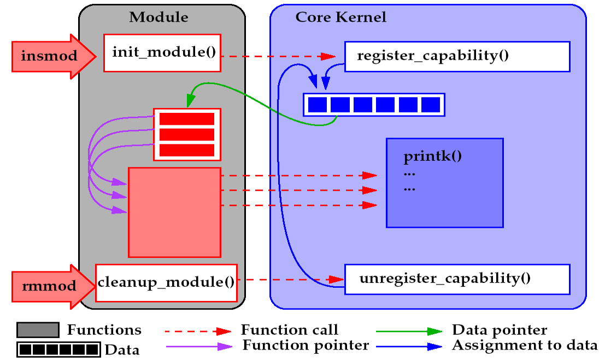
Character Device Driver（字符设备驱动）
Major and Minor Numbers
Special files under
/dev“c” for char & “b” for blockMajor number identifies driver use at open time
Adding a new driver at module initialization
xxxxxxxxxxint register_chrdev(unsigned int major, const char *name, struct file_operations *fops);If major is 0, the
register_chrdevreturn a free number
Minor number is used only by driver to control several devices
xxxxxxxxxx$ ls -l /dev/total 0# Major number,Minor numbercrw------- 1 root root 10, 235 2月 14 10:07 autofsdrwxr-xr-x 2 root root 600 2月 14 16:18 blockdrwxr-xr-x 2 root root 60 2月 14 16:18 bsgcrw------- 1 root root 10, 234 2月 14 10:07 btrfs-controldrwxr-xr-x 3 root root 60 2月 14 10:07 busdrwxr-xr-x 2 root root 4180 2月 14 16:18 charcrw------- 1 root root 5, 1 2月 14 10:08 consolebrw-rw---- 1 root disk 8, 0 2月 14 10:07 sdabrw-rw---- 1 root disk 8, 1 2月 14 10:08 sda1brw-rw---- 1 root disk 8, 2 2月 14 10:07 sda2brw-rw---- 1 root disk 8, 3 2月 14 10:07 sda3crw-rw---- 1 root disk 21, 0 2月 14 10:07 sg0drwxrwxrwt 2 root root 260 2月 14 17:10 shmcrw------- 1 root root 10, 231 2月 14 10:07 snapshotdrwxr-xr-x 3 root root 260 2月 14 10:08 sndlrwxrwxrwx 1 root root 15 2月 14 10:07 stderr -> /proc/self/fd/2lrwxrwxrwx 1 root root 15 2月 14 10:07 stdin -> /proc/self/fd/0lrwxrwxrwx 1 root root 15 2月 14 10:07 stdout -> /proc/self/fd/1sda1，sda2，sda3都由driver 8管理通过
mknod创建设备节点在
/dev目录下创建相应的设备只是为应用程序去使用它提供了途径，它们之间可以通过设备号联系在一起。xxxxxxxxxxroot@xup-VirtualBox:~# mount /dev/mmcblk0p2 /mnt/root@xup-VirtualBox:~# cd /mnt/root@xup-VirtualBox:/mnt# lsCard_Recog dev home media proc sbin sys tmpbin etc lib mnt root selinux test usrboot hello.ko lost+found opt run srv test.jpg varroot@xup-VirtualBox:/mnt# insmod ./hello.koroot@xup-VirtualBox:/mnt# ls -l /dev/ | grep helloroot@xup-VirtualBox:/mnt# mknod /dev/hello c 38 0root@xup-VirtualBox:/mnt# ls -l /dev/ | grep hellocrw-r--r-- 1 root root 38, 0 Jan 1 00:18 helloroot@xup-VirtualBox:/mnt#
Device in ZYBO board
xxxxxxxxxxroot@xup-VirtualBox:~# ls -al /dev/
From module to driver（将模块按照驱动定义的接口进行实现）
Implementation（实现流程）
- Assuming that your device name is Xxx
- Xxx_init()， initialize the device when OS is booted
- Xxx_open()，open a device
- Xxx_read()，read from kernel memory
- Xxx_write()，write
- Xxx_release() ，clean-up (close)
- init_module()
- cleanup_module()
xxxxxxxxxxstatic struct file_operations hello_fops = {owner: THIS_MODULE,read: hello_read,write: hello_write,open: hello_open,release: hello_release,};static int storage;//just for demostatic int hello_init(void) {if (register_chrdev(38, "hello", &hello_fops))return -EBUSY;storage=0; //just for demoreturn 0;}static void hello_exit(void) {unregister_chrdev(38, "hello")}module_init(hello_init);module_exit(hello_exit);Read and Write

Copying data from and to application code（API 接口）
xxxxxxxxxxssize_t read(struct file *filp, char *buff, size_t count, loff_t *offp);ssize_t write(struct file *filp, const char *buff, size_t count, loff_t *offp);In your module
xxxxxxxxxx// for copy_to_user and copy_from_userstatic ssize_t hello_read(struct file* file, char* buf, size_t count, loff_t* ppos) {copy_to_user(buf, &storage, sizeof(storage));return 1;}static ssize_t hello_write(struct file* file,const char* buf,size_t count,loff_t* ppos){copy_from_user(&storage, buf, sizeof(storage));return 1;}
User land
test.cxxxxxxxxxx//test.cint test = 0;fd = open("/dev/hello", O_RDWR);read(fd, &test, sizeof(test));printf("%d test\n");test++;write(fd, &test, sizeof(test));close(fd);Compile and test（详见
Lab3-1 Character Device Driver）
Some kernel functions can be used
xxxxxxxxxx// arch/arm/include/asm/io.h// /linux/kernel.hadd_timer()Causes a function to be executed when a given amount of time has passedcli()Prevents interrupts from being acknowledgedend_request()Called when a request has been satisfied or abortedfree_irq()Frees an IRQ previously acquired with request_irq() or irqaction()get_user*()Allows a driver to access data in user space, a memory area distinct from the kernelinb(), inb_p()Reads a byte from a port. Here, inb() goes as fast as it can, while inb_p() pauses before returning.irqaction()Registers an interrupt like a signal.IS_*(inode)Tests if inode is on a file system mounted with the corresponding flag.kfree*()Frees memory previously allocated with kmalloc()kmalloc()Allocates a chu nk of memory no larger than 4096 bytes.MAJOR()Reports the major device number for a device.MINOR()Reports the minor device number for a device.memcpy_*fs()Copies chunks of memory between user space and kernel spaceoutb(), outb_p() , outlWrites a byte to a port. Here, outb() goes as fast as it can, while outb_p() pauses before returning.printk()A version of printf() for the kernel.put_user*()Allows a driver to write data in user space.register_*dev()Registers a device with the kernel.request_irq()Requests an IRQ from the kernel, and, if successful, installs an IRQ interrupt handler.select_wait()Adds a process to the proper select_wait queue.*sleep_on()Sleeps on an event, puts a wait_queue entry in the list so that the process can be awakened on that event.sti()Allows interrupts to be acknowledged.sys_get*()System calls used to get information regarding the process, user, or group.wake_up*()Wakes up a process that has been put to sleep by the matching *sleep_on() function.Debugging Techniques
- printk
- Using the /proc Filesystem
- ioctl
- Using gdb
- The kdb Kernel Debugger
其他考虑的地方
Concurrency and race condition
- Semaphores and Mutexes
Communicating with hardware
- Using I/O Ports
- Manipulating（操作） I/O ports
Sysfs Virtual File System
Unified Device Model（统一设备模型）
Kernels previous to 2.5 had no single data structure to store information on how system is put together
Demands of newer systems with more complicated topologies and power management motivated construction of the Linux Unified Device Model
Device Model Functionality
Power management and system shutdown
- Knowing the ordering of when to shut down components.
- E.g., shut down USB mouse before USB controller
Communication with user space
- Sysfs virtual file system tightly tied into device model and exposes structure and device tuning（设备调谐）
Hotpluggable devices（设备热插拔）
- Used to handle and communicate the plugging and unplugging of devices
Device classes
- Allows system to discover types of devices that are related
Other
- Common facilities such as reference counting
- Capability to enumerate all devices and status
sysfs overview
In-memory virtual file system
Provides view of the kobject hierarchy
Enables users to view device topology of system
kobjects can export files that enable kernel variables to be read and written
- Sound a lot like /proc?
sysfs Directories
类型
block
- Contains one directory for each of the registered block devices on the system
- Contains subdirectories for partitions on the device
bus
class
- Organized by high-level function
dev
- Registered device nodes
devices
- Gives view of topology of devices in system
firmware
- System-specific tree of low-level subsystems
- ACPI, EDD, EFI
fs
kernel
- Kernel configuration options and status info
modules
power
devices is most important directory – exports device model
Much of the data in other directories is alternative organization of data in devices
Neat to see interconnections（看出整齐的互联关系）
- High-level concepts in class
- Low-level physical devices in devices
- Actual drivers in bus
PWM Sysfs Example
PWM driver overview
xxxxxxxxxxmodule_init(pwm_driver_module_init);module_exit(pwm_driver_module_exit);static struct file_operations pwm_driver_fops = {owner = THIS_MODULE,/* no read write here */};pwm_driver_module_init
xxxxxxxxxxpwm_driver_major = register_chrdev(0, DEVICE_NAME, &pwm_driver_fops);pwm_driver_class = class_create(THIS_MODULE, "pwm_driver");pwm_driver_device = device_create(pwm_driver_class, NULL, MKDEV(pwm_driver_major, 0), NULL, "pwm_device");device_create_file(pwm_driver_device,&dev_attr_pwm_frequency);device_create_file(pwm_driver_device, &dev_attr_pwm_duty);pwm_fre_addr = (unsigned long)ioremap(PWM_MOUDLE_PHY_ADDR, sizeof(u32));pwm_duty_addr = pwm_fre_addr+4;其中，
xxxxxxxxxxdevice_create_file(pwm_driver_device,&dev_attr_pwm_frequency);device_create_file(pwm_driver_device, &dev_attr_pwm_duty);static DEVICE_ATTR(pwm_frequency, S_IWUSR, NULL,sys_pwm_frequency_set);static DEVICE_ATTR(pwm_duty,S_IWUSR, NULL, sys_pwm_duty_set);static ssize_t sys_pwm_duty_set(struct device* dev, struct device_attribute* attr, const char* buf, size_t count) {// Covert ASCII to binary and frequencyfor(i = 0; i < count-1; i++) {value *= 10;value += buf[i] - '0';}if(value > 100)value = 100;value = 100000000/frequency*value/100;outl(value, pwm_duty_addr);}
LAB3
Lab3-1 Character Device Driver
./LAB3/Task-2/hello.cxxxxxxxxxx//#include <asm/uaccess.h>int driver_major;static ssize_t hello_read(struct file* file, char* buf, size_t count, loff_t* ppos) {printk("read hello \n");return 0;}static struct file_operations hello_fops = {owner: THIS_MODULE,read: hello_read,//write: hello_write,//open: hello_open,//release: hello_release,};static int __init hello_init(void) {driver_major = register_chrdev(0, "hello", &hello_fops);if (driver_major < 0) {printk("failed to register device.\n");return -1;}printk("init hello module v2 major is %d\n", driver_major);return 0;}static void __exit hello_cleanup(void) {unregister_chrdev(driver_major, "hello");printk("Cleaning up module %d\n", driver_major);}module_init(hello_init);module_exit(hello_cleanup);./LAB3/Task-2/Makefilexxxxxxxxxxobj-m = hello.oall:# make -C /your_kernel_directory M=/your_current_dirctory modulesmake -C ../Task-1/linux-digilent-3.6-digilent-13.01 M=$(PWD) modulesclean:make -C ../Task-1/linux-digilent-3.6-digilent-13.01 M=$(PWD) cleanrm -f *.o *.ko *.mod.c *.order *.symvers *~./LAB3/Task-2/test.cxxxxxxxxxxint main() {int test=0;int fd;fd = open("/dev/hello", O_RDWR);if(fd < 0) {printf("open /dev/hello fail\n");exit;}read(fd, &test, sizeof(test));printf("%d test\n",test);test++;write(fd, &test, sizeof(test));close(fd);return 0;}Cross-compile module on Host
xxxxxxxxxx$ cd ./LAB3/Task-2# 配置交叉编译环境（最新的交叉编译环境都集成在Vivado SDK中）$ export ARCH=arm$ export CROSS_COMPILE=arm-xilinx-linux-gnueabi-$ source /opt/Xilinx/SDK/2016.1/settings64.sh$ make# make -C /your_kernel_directory M=/your_current_dirctory modulesmake -C ../Task-1/linux-digilent-3.6-digilent-13.01 M=/home/gary/Workspace/git_ws/Courses/ZYBO/LAB3/Task-2 modulesmake[1]: Entering directory '/home/gary/Workspace/git_ws/Courses/ZYBO/LAB3/Task-1/linux-digilent-3.6-digilent-13.01'CC [M] /home/gary/Workspace/git_ws/Courses/ZYBO/LAB3/Task-2/hello.oBuilding modules, stage 2.MODPOST 1 modulesLD [M] /home/gary/Workspace/git_ws/Courses/ZYBO/LAB3/Task-2/hello.komake[1]: Leaving directory '/home/gary/Workspace/git_ws/Courses/ZYBO/LAB3/Task-1/linux-digilent-3.6-digilent-13.01'Compile and Test on ZYBO board
xxxxxxxxxx# Copy to ZYBO using USBroot@xup-VirtualBox:~# lsblkNAME MAJ:MIN RM SIZE RO TYPE MOUNTPOINTsda 8:0 1 7.3G 0 disk`-sda4 8:4 1 7.3G 0 partmmcblk0 179:0 0 7.4G 0 disk|-mmcblk0p1 179:1 0 50M 0 part`-mmcblk0p2 179:2 0 7.4G 0 part /root@xup-VirtualBox:~# mount /dev/sda4 /mnt/root@xup-VirtualBox:~# cd /mnt/root@xup-VirtualBox:~# cd Task-2/root@xup-VirtualBox:/mnt/Task-2# insmod ./hello.koroot@xup-VirtualBox:/mnt/Task-2# dmesg | tail[ 158.000000] hello: module license 'unspecified' taints kernel.[ 158.000000] Disabling lock debugging due to kernel taint[ 158.000000] init hello module v2 major is 249root@xup-VirtualBox:/mnt/Task-2# lsmodModule Size Used byhello 1119 0root@xup-VirtualBox:/mnt/Task-2# gcc –o test test.croot@xup-VirtualBox:/mnt/Task-2# ./testopen /dev/hello fail0 test# Major number should be the same as above info, 249root@xup-VirtualBox:/mnt/Task-2# mknod /dev/hello c 249 0root@xup-VirtualBox:/mnt/Task-2# ./test0 testroot@xup-VirtualBox:/mnt/Task-2# ./test0 testroot@xup-VirtualBox:/mnt/Task-2# ./test0 testroot@xup-VirtualBox:/mnt/Task-2# rmmod helloroot@xup-VirtualBox:/mnt/Task-2# lsmodModule Size Used by- The number should not increase since our driver don’t have memory
Keep some memory in driver
A modified
./LAB3/Task-2/hello.cxxxxxxxxxxint driver_major;static int storage;static ssize_t hello_read(struct file* file, char* buf, size_t count, loff_t* ppos) {printk("read hello \n");copy_to_user(buf, &storage, sizeof(storage));return 0;}static ssize_t hello_write(struct file* file, const char* buf, size_t count, loff_t* ppos) {printk("write hello \n");copy_from_user(&storage, buf, sizeof(storage));return 0;}static ssize_t hello_open(struct file* file, char* buf, size_t count, loff_t* ppos){printk("open hello \n");return 0;}static ssize_t hello_release(struct file* file, char* buf, size_t count, loff_t* ppos){printk("release hello \n");return 0;}static struct file_operations hello_fops = {owner: THIS_MODULE,read: hello_read,write: hello_write,open: hello_open,release: hello_release,};static int __init hello_init(void) {driver_major = register_chrdev(0, "hello", &hello_fops);if (driver_major < 0) {printk("failed to register device.\n");return -1;}printk("init hello module v3 major is %d\n", driver_major);return 0;}static void __exit hello_cleanup(void) {unregister_chrdev(driver_major, "hello");printk("Cleaning up module %d\n", driver_major);}module_init(hello_init);module_exit(hello_cleanup);
Compile and Test
xxxxxxxxxxroot@xup-VirtualBox:~# mount /dev/sda4 /mnt/root@xup-VirtualBox:~# cd /mnt/root@xup-VirtualBox:/mnt# cd Task-2_v2/root@xup-VirtualBox:/mnt/Task-2_v2# insmod ./hello.koroot@xup-VirtualBox:/mnt/Task-2_v2# lsmodModule Size Used byhello 1362 0root@xup-VirtualBox:/mnt/Task-2_v2# dmesg | tail[ 4.140000] sd 0:0:0:0: [sda] No Caching mode page present[ 4.140000] sd 0:0:0:0: [sda] Assuming drive cache: write through[ 4.170000] sda: sda4[ 4.180000] sd 0:0:0:0: [sda] No Caching mode page present[ 4.180000] sd 0:0:0:0: [sda] Assuming drive cache: write through[ 4.190000] sd 0:0:0:0: [sda] Attached SCSI removable disk[ 13.210000] init: plymouth-stop pre-start process (1371) terminated with status 1[ 290.630000] hello: module license 'unspecified' taints kernel.[ 290.630000] Disabling lock debugging due to kernel taint[ 290.640000] init hello module v3 major is 249# Major number should be the same as above info, 249root@xup-VirtualBox:/mnt/Task-2_v2# mknod /dev/hello c 249 0root@xup-VirtualBox:/mnt/Task-2_v2# gcc -o test test.croot@xup-VirtualBox:/mnt/Task-2_v2# ./test0 testroot@xup-VirtualBox:/mnt/Task-2# ./test1 testroot@xup-VirtualBox:/mnt/Task-2# ./test2 testroot@xup-VirtualBox:/mnt/Task-2# rmmod helloroot@xup-VirtualBox:/mnt/Task-2_v2# ./testopen /dev/hello fail0 testroot@xup-VirtualBox:/mnt/Task-2_v2# lsmodModule Size Used by- The number should increase each time you run it
Lab3-2 Create PWM IP
IP 是 Intellectual Property 的缩写，在嵌入式 FPGA 设计中，指的是某些设计好的模块，分为软件模块和硬件模块。这些模块，一般都是已经测试好，所有功能完善的，由一些用户自己设计的。有些模块是免费的，也有收费的模块。所有用户都可以将这些 IP 核 (IP Core) 导入到自己的工程中，同样，所有用户也都可以定制自己的 IP 核。
Hardware design
Open the
hello worldVivado projectClick Tools Create and Package IP…
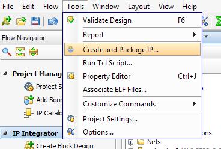 Next

IP details

IP settings

Create IP and open in another project

Motor IP created

Double click top module

Add following lines

xxxxxxxxxx// Users to add ports hereoutput wire motor_dir1,output wire motor_dir2,output wire motor_pwm1,output wire motor_pwm2,// User ports ends
xxxxxxxxxx) motor_v1_0_S00_AXI_inst (.motor_dir1(motor_dir1),.motor_dir2(motor_dir2),.motor_pwm1(motor_pwm1),.motor_pwm2(motor_pwm2),
Double click motor_v1_0_...
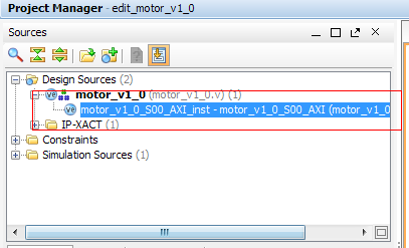 Add following lines
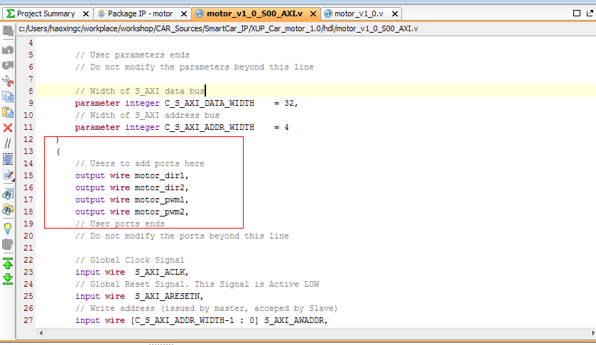 xxxxxxxxxx// Users to add ports hereoutput wire motor_dir1,output wire motor_dir2,output wire motor_pwm1,output wire motor_pwm2,// User ports ends
Click Add Sources

Add design source

Choose Create File

Set name as motor，存放位置位于 IP的
/ip_repo/motor_1.0/hdl处
OK-->Finish
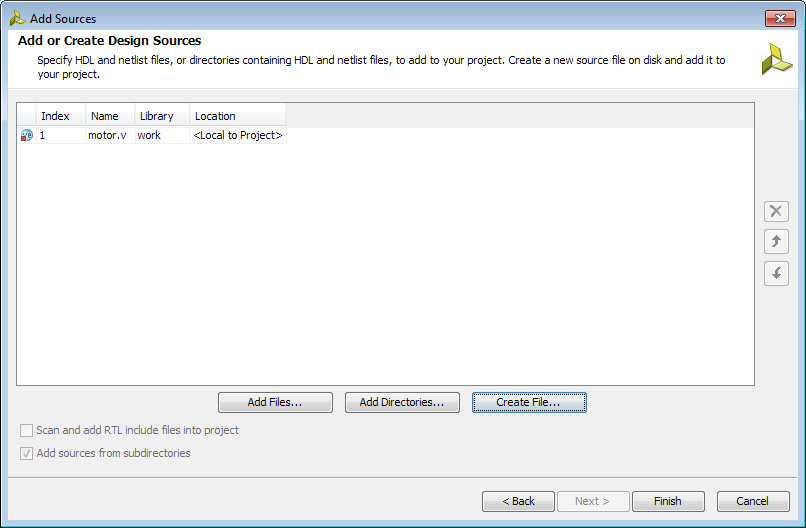 IP IO Port Definitions

Add following lines

xxxxxxxxxx// Add user logic heremotor car_motor1(.clk(S_AXI_ACLK),.rstn(S_AXI_ARESEIN),.dir(slv_reg1[0]),.pwm_dutty(slv_reg0[13:0]),.motor_dir(motor_dir1),.pwm_out(motor_pwm1));motor car_motor2(.clk(S_AXI_ACLK),.rstn(S_AXI_ARESEIN),.dir(slv_reg3[0]),.pwm_dutty(slv_reg2[13:0]),.motor_dir(motor_dir2),.pwm_out(motor_pwm2));// User logic endsModify
motorIP module
xxxxxxxxxxmodule motor(input clk,input rstn,input dir,input [13:0] pwm_dutty,input motor_dir,input pwm_out);reg [13:0] pwm_cnt;always@(posedge clk) beginif((pwm_cnt == 9999) || ~rstn)pwm_cnt <= 0;elsepwm_cnt <= pwm_cnt + 1;endassign pwm_out = pwm_dutty > pwm_cnt ? 1'b1 : 1'b0;assign motor_dir = dir;endmoduleChange to Package IP tab->Click Merge changes

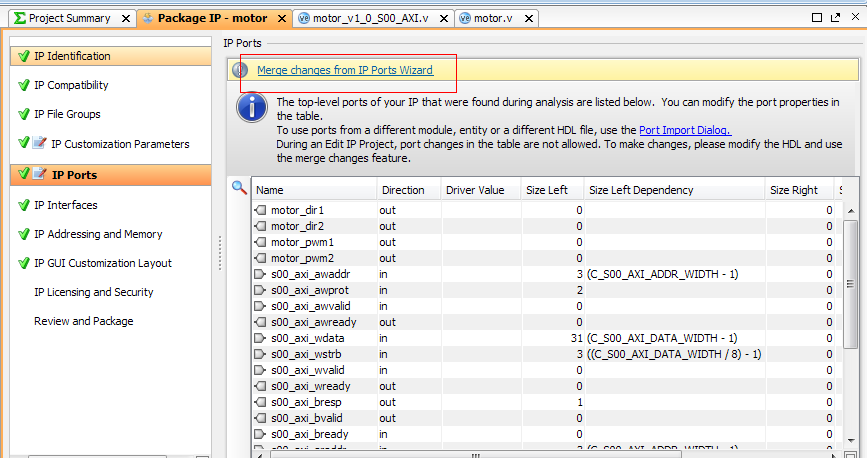 Check IP GUI

Re-Package IP（用于编辑 IP 的临时工程会自动关闭）
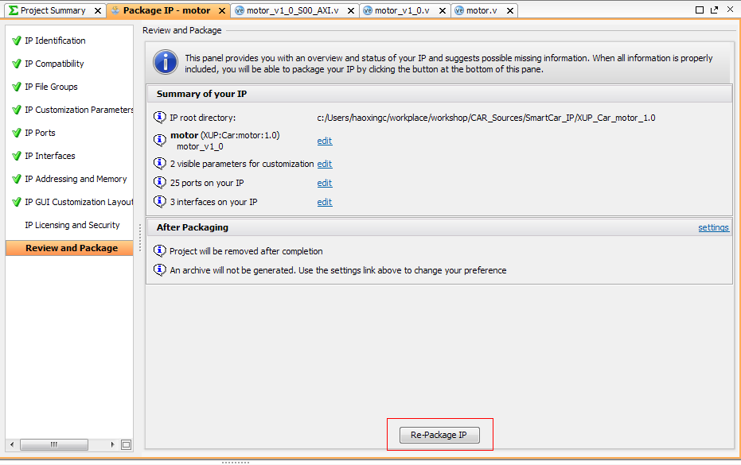
Using designed PWM IP in
hello worldprojectIn
hello worldproject Block Design, Add pwm IP
Search pwm
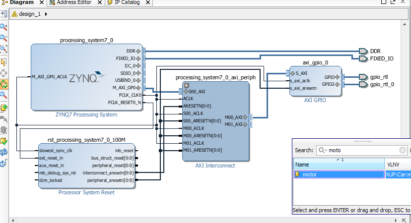 Auto connect

选中 PWM 模块的 4 个输出引脚，右键
Make External创建外部管脚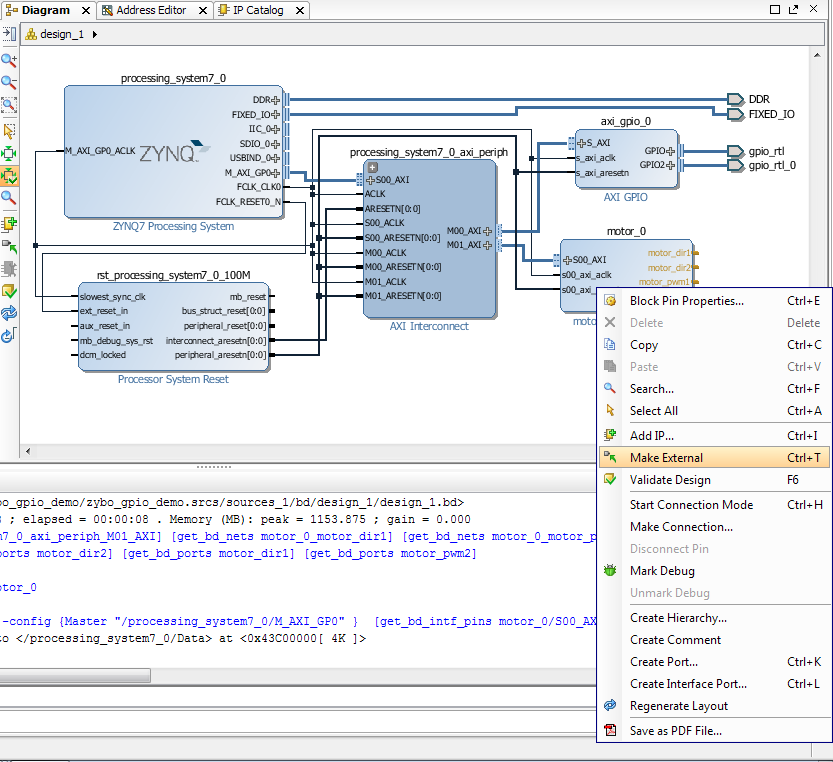
Modified constraints，添加以下管脚约束（引脚对应）
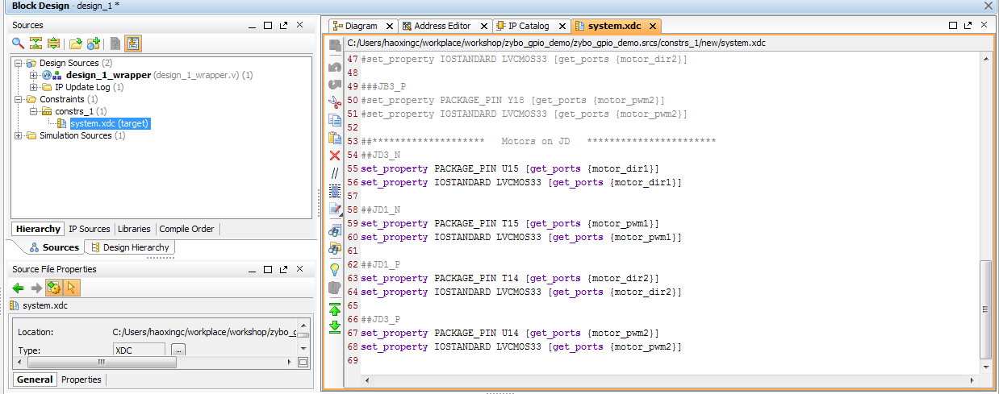 xxxxxxxxxx##****************************** Motor on JD ******************************## JD3_Nset_property PACKAGE_PIN U15 [get_ports {motor_dir1}]set_property IOSTANDARD LVCMOS33 [get_ports {motor_dir1}]## JD1_Nset_property PACKAGE_PIN T15 [get_ports {motor_pwm1}]set_property IOSTANDARD LVCMOS33 [get_ports {motor_pwm1}]## JD1_Pset_property PACKAGE_PIN T14 [get_ports {motor_dir2}]set_property IOSTANDARD LVCMOS33 [get_ports {motor_dir2}]## JD3_Pset_property PACKAGE_PIN U14 [get_ports {motor_pwm2}]set_property IOSTANDARD LVCMOS33 [get_ports {motor_pwm2}]Recreate HDL wapper

Regenerate Output Products

Generate Bitstream

Software Design
Lab3-3 PWM IP Modify
Using Vivado to open the hardware system（原始的教程是使用该工程，如果遇到问题，可以使用上面已经添加了
motor模块的hello world工程）xxxxxxxxxx# 可惜人家是Vivado2014.4，我用Vivado2016.1搞不定# 通过tcl恢复包含PWM的硬件工程# 进入Vivado的TCL-consolecd 'your path'/hardware_prjsource ./system_pro.tcl# 等待bit生成完毕
Open PWM IP in IP Catalog
Window->IP Catalog
Change Edition Number

PWM IP Open

Modify the code

In Package IP Tab, Merge Changes


Repackage IP

Lab3-4 Sysfs PWM kernel module
./LAB3/Task-3/pwm_driver.cxxxxxxxxxxMODULE_AUTHOR("Durant35");MODULE_DESCRIPTION("pwm");MODULE_VERSION("v2.0");MODULE_LICENSE("GPL");static int pwm_major;static struct class* pwm_class = NULL;static struct device* pwm_device = NULL;unsigned long mypwm_addr = 0;unsigned long mygpio_addr = 0;/*** set the speed of pwn+x* if bit[31]=0 stop* else go*/static ssize_t sys_pwm_left_speed_set (struct device* dev, struct device_attribute* attr, const char* buf, size_t count){u32 num = 0;printk("debug: at pwm left speed main!\n");sscanf(buf, "%d", &num);printk("debug: get num:%d\n", num);printk("debug: addr = :0x%x\n", mypwm_addr);iowrite32(num == 0 ? 0 : (num | 0x80000000), mypwm_addr);return count;}static ssize_t sys_pwm_left_dir_set (struct device* dev, struct device_attribute* attr, const char* buf, size_t count){u32 num = 0;sscanf(buf, "%d", &num);iowrite32(num, mypwm_addr + 4);return count;}static ssize_t sys_pwm_right_speed_set (struct device* dev, struct device_attribute* attr, const char* buf, size_t count){u32 num = 0;sscanf(buf, "%d", &num);iowrite32(num == 0 ? 0 : (num | 0x80000000), mypwm_addr + 8);return count;}static ssize_t sys_pwm_right_dir_set (struct device* dev, struct device_attribute* attr, const char* buf, size_t count){u32 num = 0;sscanf(buf, "%d", &num);iowrite32(num, mypwm_addr + 12);return count;}//pwm speedstatic DEVICE_ATTR(pwm_left_speed, S_IWUSR, NULL, sys_pwm_left_speed_set);static DEVICE_ATTR(pwm_right_speed, S_IWUSR, NULL, sys_pwm_right_speed_set);//pwm directionstatic DEVICE_ATTR(pwm_left_dir, S_IWUSR, NULL, sys_pwm_left_dir_set);static DEVICE_ATTR(pwm_right_dir, S_IWUSR, NULL, sys_pwm_right_dir_set);static struct file_operations pwm_fops = {.owner = THIS_MODULE,};static int __init mydriver_module_init(void){int ret;pwm_major = register_chrdev(0, DEVICE_NAME, &pwm_fops);if (pwm_major < 0){printk("failed to register device.\n");return -1;}pwm_class = class_create(THIS_MODULE, "pwm_class");if (IS_ERR(pwm_class)){printk("failed to create device class.\n");unregister_chrdev(pwm_major, DEVICE_NAME);return -1;}pwm_device = device_create(pwm_class, NULL, MKDEV(pwm_major, 0), NULL, "pwm_device");if (IS_ERR(pwm_device)){printk("failed to create device .\n");unregister_chrdev(pwm_major, DEVICE_NAME);return -1;}//pwmret = device_create_file(pwm_device, &dev_attr_pwm_left_speed);if (ret < 0)printk("failed to create /sys endpoint");ret = device_create_file(pwm_device, &dev_attr_pwm_right_speed);if (ret < 0)printk("failed to create /sys endpoint");ret = device_create_file(pwm_device, &dev_attr_pwm_left_dir);if (ret < 0)printk("failed to create /sys endpoint");ret = device_create_file(pwm_device, &dev_attr_pwm_right_dir);if (ret < 0)printk("failed to create /sys endpoint");mypwm_addr = (unsigned long)ioremap(MYPWM_PHY_ADDR, sizeof(u32));printk("my pwm driver initial successfully!\n");return 0;}static void __exit mydriver_module_exit(void){device_remove_file(pwm_device, &dev_attr_pwm_left_speed);device_remove_file(pwm_device, &dev_attr_pwm_right_speed);device_remove_file(pwm_device, &dev_attr_pwm_left_dir);device_remove_file(pwm_device, &dev_attr_pwm_right_dir);device_destroy(pwm_class, MKDEV(pwm_major, 0));class_unregister(pwm_class);class_destroy(pwm_class);unregister_chrdev(pwm_major, DEVICE_NAME);printk("pwm module exit.\n");}module_init(mydriver_module_init);module_exit(mydriver_module_exit);./LAB3/Task-3/Makefilexxxxxxxxxxifneq ($(KERNELRELEASE),)obj-m := pwm_driver.oelse#KERNEL_DIR := <YOUR_DIR>/ZedBoard/Kernel/Digilent-linux-3.3-digilent-7f8e908KERNEL_DIR := ../Task-1/linux-digilent-3.6-digilent-13.01PWD := $(shell pwd)all:$(MAKE) -C $(KERNEL_DIR) SUBDIRS=$(PWD) modules ARCH=armclean:rm *.o *.ko *.mod.cendifPWM driver as module
xxxxxxxxxx$ cd ./LAB3/Task-3# 配置交叉编译环境（最新的交叉编译环境都集成在Vivado SDK中）$ export ARCH=arm$ export CROSS_COMPILE=arm-xilinx-linux-gnueabi-$ source /opt/Xilinx/SDK/2016.1/settings64.sh$ make$ modinfo ./pwm_driver.kofilename: /home/gary/Workspace/git_ws/Courses/ZYBO/LAB3/Task-3/./pwm_driver.kolicense: GPLversion: v2.0description: pwmauthor: Durant35srcversion: 632D3D00D0727423CF51FB5depends:vermagic: 3.6.0-digilent-13.01 SMP preempt mod_unload modversions ARMv7# Copy pwm_driver.ko to ZYBO using USBroot@xup-VirtualBox:~# mount /dev/sda4 /mnt/root@xup-VirtualBox:~# cd /mnt/root@xup-VirtualBox:~# cd Task-3/root@xup-VirtualBox:/mnt# cd Task-3/root@xup-VirtualBox:/mnt/Task-3# lsMakefile modules.order pwm_driver.ko pwm_driver.mod.oModule.symvers pwm_driver.c pwm_driver.mod.c pwm_driver.oroot@xup-VirtualBox:/mnt/Task-3# insmod ./pwm_driver.koroot@xup-VirtualBox:/mnt/Task-3# insmod ./pwm_driver.koroot@xup-VirtualBox:/mnt/Task-3# lsmodModule Size Used bypwm_driver 2477 0root@xup-VirtualBox:/mnt/Task-3# rmmod pwm_driverroot@xup-VirtualBox:/mnt/Task-3# dmesg | tail[ 4.280000] sd 0:0:0:0: [sda] No Caching mode page present[ 4.280000] sd 0:0:0:0: [sda] Assuming drive cache: write through[ 4.280000] sd 0:0:0:0: [sda] Attached SCSI removable disk[ 4.650000] init: failsafe main process (1200) killed by TERM signal[ 4.720000] init: udev-fallback-graphics main process (1235) terminated with status 1[ 4.790000] init: plymouth main process (633) killed by SEGV signal[ 4.790000] init: plymouth-splash main process (1244) terminated with status 2[ 14.810000] init: plymouth-stop pre-start process (1367) terminated with status 1[ 91.250000] my pwm driver initial successfully![ 120.990000] pwm module exit.root@xup-VirtualBox:/mnt/Task-3# cd /sys/class/pwm_class/pwm_deviceroot@xup-VirtualBox:/sys/class/pwm_class/pwm_device# lsdev pwm_left_dir pwm_right_dir subsystempower pwm_left_speed pwm_right_speed ueventroot@xup-VirtualBox:/sys/class/pwm_class/pwm_device# echo 1 > pwm_left_dirroot@xup-VirtualBox:/sys/class/pwm_class/pwm_device# echo 5000 > pwm_left_speed# Use scope to measure JA1 wave form# Add your own printk in the course code to debug
Lab3-5 I/O Access
The {in,out}[bwl] macros are for emulating x86-style PCI/ISA IO space.
xxxxxxxxxxoutl(value, virtual_address);value = inl(virtual_address);Another version of
pwm_driver.c（Using I/O Access to configure PWM IP's frequency and duty cycle）xxxxxxxxxx//This Address is based XPSMODULE_AUTHOR("Xilinx XUP");MODULE_DESCRIPTION("PWM moudle dirver");MODULE_VERSION("v1.0");MODULE_LICENSE("GPL");static int pwm_driver_major;static struct class* pwm_driver_class = NULL;static struct device* pwm_driver_device = NULL;// pwm_fre_addr&pwm_duty_addr init in pwm_driver_module_init()unsigned long pwm_fre_addr = 0; //pwm moulde's frequency visual addressunsigned long pwm_duty_addr = 0; //pwm moulde's duty visual addressstatic long frequency = 0;static struct file_operations pwm_driver_fops = {.owner = THIS_MODULE,};static ssize_t sys_pwm_frequency_set (struct device* dev, struct device_attribute* attr, const char* buf, size_t count){long value = 0;int i;frequency = 0;outl(value, pwm_fre_addr); //close pwm moudle before we modfiy the frequencyfor(i = 0; i < count-1; i++) {frequency *= 10;frequency += buf[i] - '0';}if(value > 100000000)value=100000000;value = 100000000/frequency; // 100Mhz/frequency 100Mhz is set by XPSoutl(value, pwm_fre_addr);return count;}static ssize_t sys_pwm_duty_set (struct device* dev, struct device_attribute* attr, const char* buf, size_t count) //duty cycle{long value = 0;int i;outl(value, pwm_duty_addr); //close pwm moudle before we modfiy the duty cyclefor(i = 0; i < count-1; i++) {value *= 10;value += buf[i] - '0';}if (value>100)value = 100;value = 100000000/frequency*value/100;if (value != 0)value = value | 0x80000000;outl(value, pwm_duty_addr);return count;}static DEVICE_ATTR(pwm_frequency, S_IWUSR, NULL, sys_pwm_frequency_set);static DEVICE_ATTR(pwm_duty, S_IWUSR, NULL, sys_pwm_duty_set);static int __init pwm_driver_module_init(void){int ret;pwm_driver_major = register_chrdev(0, DEVICE_NAME, &pwm_driver_fops);if(pwm_driver_major < 0) {printk("failed to register device.\n");return -1;}pwm_driver_class = class_create(THIS_MODULE, "pwm_driver");if(IS_ERR(pwm_driver_class)) {printk("failed to create pwm moudle class.\n");unregister_chrdev(pwm_driver_major, DEVICE_NAME);return -1;}pwm_driver_device = device_create(pwm_driver_class, NULL, MKDEV(pwm_driver_major, 0), NULL, "pwm_device");if(IS_ERR(pwm_driver_device)) {printk("failed to create device .\n");unregister_chrdev(pwm_driver_major, DEVICE_NAME);return -1;}ret = device_create_file(pwm_driver_device, &dev_attr_pwm_frequency);if(ret < 0)printk("failed to create pwm_frequency endpoint\n");ret = device_create_file(pwm_driver_device, &dev_attr_pwm_duty);if(ret < 0)printk("failed to create pwm_duty endpoint\n");//To get Custom IP--PWM moudle's virtual addresspwm_fre_addr = (unsigned long)ioremap(PWM_MOUDLE_PHY_ADDR, sizeof(u32));pwm_duty_addr = pwm_fre_addr + 4;printk(" pwm driver initial successfully!\n");return 0;}static void __exit pwm_driver_module_exit(void){device_remove_file(pwm_driver_device, &dev_attr_pwm_frequency);device_remove_file(pwm_driver_device, &dev_attr_pwm_duty);device_destroy(pwm_driver_class, MKDEV(pwm_driver_major, 0));class_unregister(pwm_driver_class);class_destroy(pwm_driver_class);unregister_chrdev(pwm_driver_major, DEVICE_NAME);printk("pwm module exit.\n");}module_init(pwm_driver_module_init);module_exit(pwm_driver_module_exit);Add I/O access to your
hello.cdriver对 Lab2-4 Make SD Card 中使用的系统进行 Lab2-2 Bootloader 中的
LED Test发现二者的 LED 和 SW 的硬件地址是一样的。- Switches address：0x41200000
- LEDs address：0x41200008
Task-4：Try to access the LED address, turn LED on and off in Open
Task-5：Turn LED on and off when read and write
Day04
Version Control with Git
Basic Intro to Git
- Discuss how Git differs from Subversion
- Discuss the basic Git model
- Pull/clone files from a repository on github
- Edit files in your own local Git repo
- Push files to a repo on github
Git History
Came out of Linux development community
Linus Torvalds, 2005
Initial goals:
- Speed
- Support for non-linear development (thousands of parallel branches)
- Fully distributed
- Able to handle large projects like Linux efficiently
Basic Git model
Git uses a distributed model

Git takes snapshots

Git uses checksums
In Subversion each modification to the central repo incremented the version # of the overall repo.
How will this numbering scheme work when each user has their own copy of the repo, and commits changes to their local copy of the repo before pushing to the central server?????
Instead, Git generates a unique SHA-1 hash – 40 character string of hex digits, for every commit. Refer to commits by this ID rather than a version number. Often we only see the first 7 characters:
1677b2dEdited first line of readme258efa7Added line to readme0e52da7Initial commit
A Local Git project has three areas（Staged Files：暂存文件）

Git file lifecycle

Basic Git Workflow
Modify files in your working directory.
Stage files, adding snapshots of them to your staging area（暂存区）.
Do a commit, which takes the files as they are in the staging area and stores that snapshot permanently to your Git directory.
Notes:
- If a particular version of a file is in the git directory, it’s considered committed.
- If it’s modified but has been added to the staging area, it is staged.
- If it was changed since it was checked out but has not been staged, it is modified.
Aside（此外）: So what is github?
GitHub.comis a site for online storage of Git repositories.Many open source projects use it, such as the Linux kernel.
You can get free space for open source projects or you can pay for private projects.
Question: Do I have to use github to use Git?
Answer: No!
- you can use Git completely locally for your own purposes, or
- you or someone else could set up a server to share files, or
- you could share a repo with users on the same file system (as long everyone has the needed file permissions).
Get ready to use Git!
Set the name and email for Git to use when you commit
xxxxxxxxxx$ git config --global user.name “Bugs Bunny”$ git config --global user.email bugs@gmail.comYou can call git config –list to verify these are set.
These will be set globally for all Git projects you work with.
You can also set variables on a project-only basis by not using the
--globalflagYou can also set the editor that is used for writing commit messages：
xxxxxxxxxx$ git config --global core.editor emacs# (it is vim by default)
Create a local copy of a repo
1.Two common scenarios (only do one of these):
To clone an already existing repo to your current directory:
xxxxxxxxxx$ git clone <url> [local dir name]This will create a directory named
local dir name, containing a working copy of the files from the repo, and a.gitdirectory (used to hold the staging area and your actual repo)To create a Git repo in your current directory:
xxxxxxxxxx$ git initThis will create a
.gitdirectory in your current directory.
2.Then you can commit files in that directory into the repo:
xxxxxxxxxx$ git add file1.java$ git commit –m "initial project version"
Git commands

Committing files
The first time we ask a file to be tracked, and every time before we commit a file we must add it to the staging area:
xxxxxxxxxx$ git add README.txt hello.javaThis takes a snapshot of these files at this point in time and adds it to the staging area.
To move staged changes into the repo we commit:
xxxxxxxxxx$ git commit -m "Fixing bug #22"To unstage a change on a file before you have committed it:
xxxxxxxxxx$ git reset HEAD -- filenameTo unmodify a modified file:
xxxxxxxxxx$ git checkout -- filenameNote！！！: These commands are just acting on your local version of repo.
Status and Diff
To view the status of your files in the working directory and staging area:
xxxxxxxxxx$ git status# -s shows a short one line version similar to svn$ git status -sTo see what is modified but unstaged:
xxxxxxxxxx$ git diffTo see staged changes:
xxxxxxxxxx$ git diff --cached
After editing a file…
xxxxxxxxxx[rea@attu1 superstar]$ emacs rea.txt[rea@attu1 superstar]$ git status# On branch master# Changes not staged for commit:# (use "git add <file>..." to update what will be committed)# (use "git checkout -- <file>..." to discard changes in working directory)## modified: rea.txt#no changes added to commit (use "git add" and/or "git commit -a")[rea@attu1 superstar]$ git status -sM rea.txt #Note: M is in second column = "working tree"[rea@attu1 superstar]$ git diff#Note: Shows modifications that have not been staged.diff --git a/rea.txt b/rea.txtindex 66b293d..90b65fd 100644--- a/rea.txt+++ b/rea.txt@@ -1,2 +1,4 @@Here is rea's file.++One new line added.[rea@attu1 superstar]$ git diff --cached#Note: Shows nothing, no modifications have been staged yet.[rea@attu1 superstar]$After adding file to staging area…
xxxxxxxxxx[rea@attu1 superstar]$ git add rea.txt[rea@attu1 superstar]$ git status# On branch master# Changes to be committed:# (use "git reset HEAD <file>..." to unstage)## modified: rea.txt#[rea@attu1 superstar]$ git status -sM rea.txt #Note: M is in first column = "staging area"[rea@attu1 superstar]$ git diff#Note: Shows nothing, no modifications that have not been staged.[rea@attu1 superstar]$ git diff --cached#Note: Shows staged modifications.diff --git a/rea.txt b/rea.txtindex 66b293d..90b65fd 100644--- a/rea.txt+++ b/rea.txt@@ -1,2 +1,4 @@Here is rea's file.++One new line added.Viewing logs
To see a log of all changes in your local repo:
xxxxxxxxxx$ git log1677b2d Edited first line of readme...258efa7 Added line to readme...0e52da7 Initial commit...# to show a shorter version$ git log --oneline# to show only the 5 most recent updates$ git log -5Note！！！:
- changes will be listed by
commitID #, (SHA-1 hash) - changes made to the remote repo before the last time you cloned/pulled from it will also be included here
- changes will be listed by
Pulling and Pushing
Good practice:
- Add and Commit your changes to your local repo
- Pull from remote repo to get most recent changes (fix conflicts if necessary, add and commit them to your local repo)
- Push your changes to the remote repo
To fetch the most recent updates from the remote repo into your local repo, and put them into your working directory:
xxxxxxxxxx$ git pull origin masterTo push your changes from your local repo to the remote repo:
xxxxxxxxxx$ git push origin masterNote！！！:
origin= an alias for the URL you cloned frommaster= the remote branch you are pulling from/pushing to- the local branch you are pulling to/pushing from is your current branch
Branching
To create a branch called experimental:
xxxxxxxxxx$ git branch experimentalTo list all branches: (
*shows which one you are currently on)xxxxxxxxxx$ git branchTo switch to the experimental branch:
xxxxxxxxxx$ git checkout experimentalLater on, changes between the two branches differ, to merge changes from experimental into the master:
xxxxxxxxxx$ git checkout master$ git merge experimentalNote！！！:
git log --graphcan be useful for showing branches.Note！！！: These branches are in your local repo!
SVN vs. Git
SVN:
- central repository approach – the main repository is the only “true” source, only the main repository has the complete file history
- Users check out local copies of the current version
Git:
- Distributed repository approach – every checkout of the repository is a full fledged repository（完整的存储库）, complete with history
- Greater redundancy and speed
- Branching and merging repositories is more heavily used as a result
Do this（Github simple use）
xxxxxxxxxx$ git config --global user.name "Your Name"$ git config --global user.email youremail@whatever.com$ git clone https://github.com/rea2000/santalist.git# Then try:$ git log$ git log --oneline# Create a file named userID.txt (e.g. rea.txt)$ git status$ git status -s# Add the file:$ git add userID.txt$ git status$ git status -s# Commit the file to your local repo:$ git commit –m "added rea.txt file"$ git status$ git status -s$ git log --oneline# *WAIT, DO NOT GO ON TO THE NEXT STEPS UNTIL YOU ARE TOLD TO!!# Pull from remote repo:$ git pull origin master# Push to remote repo:$ git push origin master
LAB4
Lab4-1 PWM ioctl app
./LAB4/Task-1/pwm_driver.c，insert following code:xxxxxxxxxxstatic ssize_t pwm_ioctl(struct file *file, unsigned int cmd, unsigned long arg){u32 status = 0xff;int ret;printk("debug : in ioctl!!");switch(cmd){case 0:case 1://1. pwm left speedprintk("left speed\n");return 0;case 5://2. pwm left directionprintk("left dir\n");return 0;case 3://3. pwm right speedprintk("right speed\n");return 0;case 4://4. pwm right directionprintk("right dir\n");return 0;default:printk("default cmd=%d\n",cmd);return -EINVAL;}}static struct file_operations pwm_fops = {.owner = THIS_MODULE,.unlocked_ioctl = pwm_ioctl,};PWM driver as module
xxxxxxxxxx# Modify the Makefile, KENEL_DIR point to your Digilent_linux….# Make# Copy pwm_driver.ko to ZYBO boardroot@xup-VirtualBox:/mnt/Task-1# lsMakefile modules.order pwm_driver.c pwm_driver.mod.c pwm_driver.oModule.symvers pwm_app.c pwm_driver.ko pwm_driver.mod.oroot@xup-VirtualBox:/mnt/Task-1# insmod ./pwm_driver.koroot@xup-VirtualBox:/mnt/Task-1# lsmodModule Size Used bypwm_driver 2803 0root@xup-VirtualBox:/mnt/Task-1# rmmod pwm_driverroot@xup-VirtualBox:/mnt/Task-1# dmesg | tail[ 4.210000] sd 0:0:0:0: [sda] No Caching mode page present[ 4.220000] sd 0:0:0:0: [sda] Assuming drive cache: write through[ 4.240000] sd 0:0:0:0: [sda] Attached SCSI removable disk[ 4.680000] init: udev-fallback-graphics main process (1217) terminated with status 1[ 4.740000] init: failsafe main process (1195) killed by TERM signal[ 4.780000] init: plymouth main process (632) killed by SEGV signal[ 4.780000] init: plymouth-splash main process (1227) terminated with status 2[ 14.490000] init: plymouth-stop pre-start process (1363) terminated with status 1[ 127.000000] my pwm driver initial successfully![ 208.200000] pwm module exit.root@xup-VirtualBox:/mnt/Task-1# insmod ./pwm_driver.koCreate app，
./LAB4/Task-1/pwm_app.cxxxxxxxxxxstatic int pwm_fd;int main(void) {// open devicepwm_fd = open("/dev/pwm_device", 0);if(pwm_fd < 0) {perror("open device pwm_device error!\n");exit(1);}while(1) {ioctl(pwm_fd,5,1);ioctl(pwm_fd,1,10000);sleep(10);ioctl(pwm_fd,1,0);sleep(1);ioctl(pwm_fd,5,0);ioctl(pwm_fd,1,10000);sleep(10);ioctl(pwm_fd,1,0);sleep(1);ioctl(pwm_fd,4,1);ioctl(pwm_fd,3,10000);sleep(10);ioctl(pwm_fd,3,0);sleep(1);ioctl(pwm_fd,4,0);ioctl(pwm_fd,3,10000);sleep(10);ioctl(pwm_fd,3,0);}return 0;}Compile & run app
xxxxxxxxxxroot@xup-VirtualBox:/mnt/Task-1# gcc -o pwm_app pwm_app.croot@xup-VirtualBox:/mnt/Task-1# ./pwm_app^Croot@xup-VirtualBox:/mnt/Task-1# dmesg | tail[ 600.570000] debug : in ioctl!!right dir[ 600.570000] debug : in ioctl!!right speed[ 610.570000] debug : in ioctl!!right speed[ 611.570000] debug : in ioctl!!right dir[ 611.570000] debug : in ioctl!!right speed[ 621.570000] debug : in ioctl!!right speed[ 621.570000] debug : in ioctl!!left dir[ 621.570000] debug : in ioctl!!left speed[ 668.590000] debug : in ioctl!!left dir[ 668.590000] debug : in ioctl!!left speed
Lab4-2 V4L Streaming
scripts（You need a USB camera）
xxxxxxxxxxroot@xup-VirtualBox:~# cd /root/mjpeg_face_leaf_detection/mjpg-streamerroot@xup-VirtualBox:~/mjpeg_face_leaf_detection/mjpg-streamer# export LD_LIBRARY_PATH=/root/mjpeg_face_leaf_detection/mjpg-streamerroot@xup-VirtualBox:~/mjpeg_face_leaf_detection/mjpg-streamer# ./mjpg_streamer -i "input_uvc.so -y -f 24 -r 640*480 -q 60" "output_http.so -p 8080 -w /var/www"MJPG Streamer Version: svn rev: exportedi: Using V4L2 device.: /dev/video0i: Desired Resolution: 640 x 480i: Frames Per Second.: 24i: Format............: YUVi: JPEG Quality......: 60ERROR opening V4L interface: No such file or directoryInit v4L2 failed !! exit fatali: init_VideoIn failedThen，you can access the website to see the camera video
Day05
Review for missing
ZYBO Boot Process for Linux
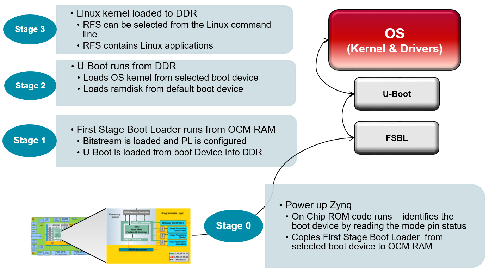
Vivado + SDK

Xilinx Platform Studio (XPS)
- Design environment for processing system
- Xilinx Microprocessor Project (XMP) file
- Microprocessor Hardware Specification (MHS) file
- Platform, software, and peripheral simulation
- ChipScope Pro logic analyzer integration
Software Development Kit (SDK)
- Project workspace
- Hardware platform definition
- Board Support Package (BSP)
- Software application
- Software debugging
Embedded System Design Flow for Zynq-7000 AP SoC

HW/SW Co-design Overview
软硬件协同设计理论体系
- 系统任务描述 (System Task Description )
- 软硬件划分 (Hardware/Software Partition)
- 软硬件协同综合 (Hardware/Software Co-synthesis )
- 软硬件协同仿真 (Hardware/Software Co-simulation )
- 设计空间探索 (Design space exploration )
- 与系统设计相关的低压低功耗设计，可测性设计等等。
Implementation Alternatives（硬件平台的演变）

Trade-off


FPGA Processing: Use Models

Integrated HW/SW platform for Embedded SOC
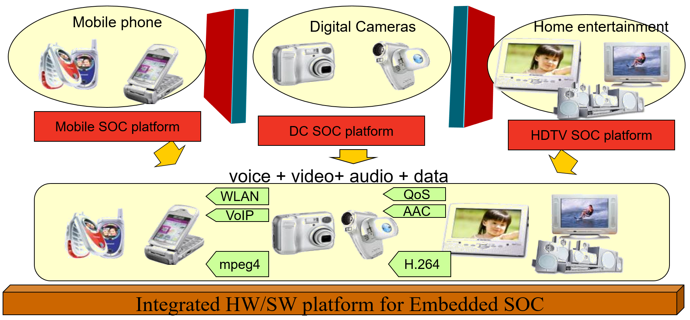 Accelerating Processor Options

Xilinx puts ARM core into its FPGA（s supper convergence）

System-on-Chip
Algorithms in a GSM transmitter and receiver and their mapping on to conventional target technologies consisting of ASIC, FPGA and DSP

A system-on-chip solution

Project flow changing
Traditional project flow

- Late integration and bug detection
- Redesign cycle with possible re-spin（可能推倒重来）
Verification at the Backend
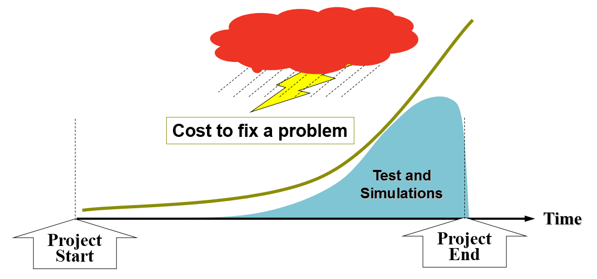 Refined project timeline

- Coordinated feature release
- Iterative integration and debug
- Reuse wherever feasible
- Centralized version control
Concurrent design（并行设计）

Integrating software and hardware before the prototypes are built
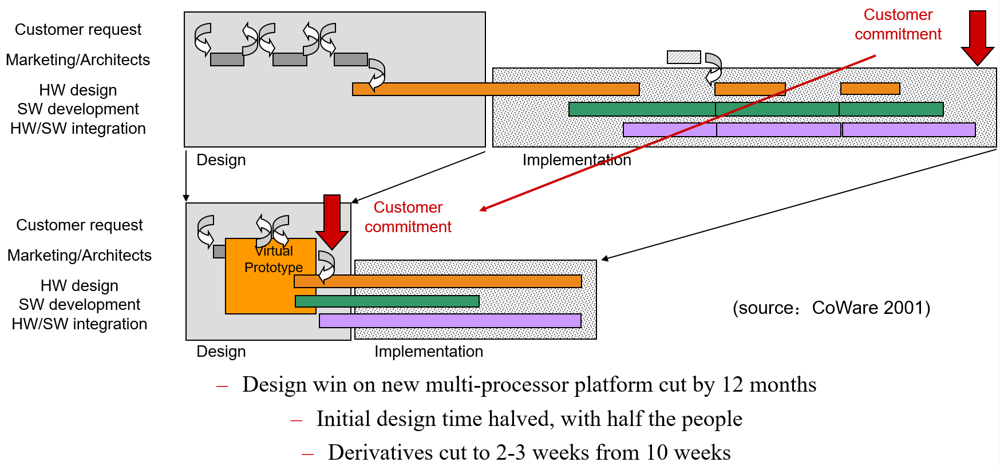 Hardware & Software Co-design

System Design

System Level Language


Design Space Exploration

考虑的问题
- Area
- Critical path delays
- Testability
- Power dissipation（功耗）

对人来说，太复杂了，交给机器做, Vivado-HLS 工具，C转换为优化的硬件实现
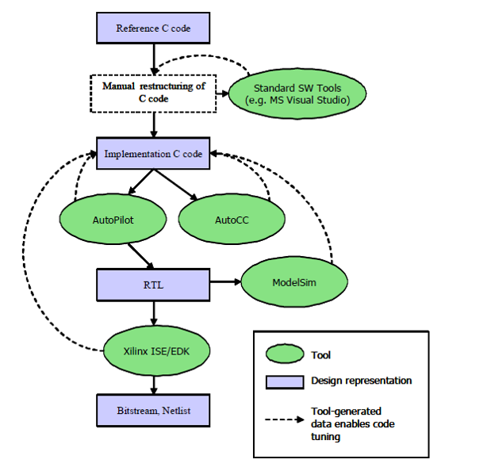 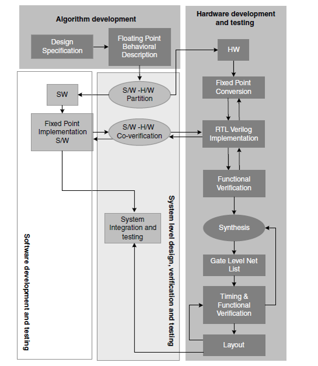
High-Level Synthesis: HLS

Overview
High-Level Synthesis
- Creates an RTL implementation from C level source code（C转RTL）
- Extracts control and dataflow from the source code（提取控制和数据流）
- Implements the design based on defaults and user applied directives（不同优化的转化）
Many implementation are possible from the same source description
- Smaller designs, faster designs, optimal designs
- Enables design exploration
Introduction to High-Level Synthesis
How is hardware extracted from C code?
Control and datapath can be extracted from C code at the top level
The same principles used in the example can be applied to sub-functions
- At some point in the top-level control flow, control is passed to a sub-function
- Sub-function may be implemented to execute concurrently with the top-level and or other sub-functions
How is this control and dataflow turned into a hardware design?
Vivado HLS maps this to hardware through scheduling and binding processes
How is my design created?
- How functions, loops, arrays and IO ports are mapped?
HLS: Control Extraction
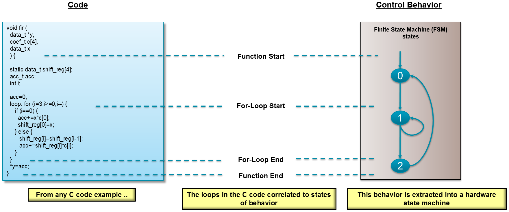 Vivado HLS Benefits
Productivity（生产率）
- Verification
- Functional
- Architectural
- Abstraction
- Datatypes
- Interface
- Classes
- Automation
Block level specification AND verification significantly reduced
Permutability（可变性）
Architecture Exploration
Timing
- Parallelization
- Pipelining
Resources
- Sharing
Better QoR
Rapid design exploration delivers QoR rivaling hand-coded RTL（QoR比人更高）
Creative Suggestion
OpenCV 寻线
- SD卡系统
/root/openhwcar
- SD卡系统
小车加声音
- zrobot_v1-master.zip/sw/app/music_demo_arm
闭环(读取小车实时速度，实现反馈）
LAB5/close-loop/*
超声波（循迹）
- zrobot_v1-master.zip/sw/driver/ultrasonic
安卓应用(手机上视频展示和手柄控制）
- zrobot_v1-master.zip/Android
OpenCV Case Study
人脸识别
- In 2001, P.Viola presented a new face detection algorithm using boosted cascade of HAAR features in his paper [1]. Afterwards,
- Intel realized the Adaboost face detection algorithm in its OpenCV library [2].
- The optimized code for x86 architecture can detect accurately on an image of 384*288 at speed of 10fps with 2GHz P4 processor.
- However, performance of the algorithm is much poorer on embedded platform than on desktop platform. Under condition of the same image size and detection accuracy
- it takes 5 seconds for a 200MHz ARM9 processor to finish the detection.
- OpenCV: Open Source Computer Vision Library, BSD license
Accelerated face detection
Start from software + XUP board
Implemented entirely in hardware on a Xilinx Spartan 3A 1800 DSP
50MHz, 15~25 FPS
Faster than face detection on TI’s DM642 DSP (600MHz VLIW)

Prototype Board
- Xilinx XUP Virtex-II Pro Development System
- Processor: PPC 405
- Processor clock frequency: 300MHz
- Bus clock frequency: 100MHz
- BRAM Memory : about 200KBytes
Technology Roadmap
Embedded Solution(Done 2007.07)
- Powerpc405+coreConnect
- Integrate Video Port to PLB Bus
- XUP V2Pro Prototype
Full Hardware Solution(Done 2007.09)
- State Machine based
- XUP V2Pro Prototype
Commercial Product(2007.11)
- Based on full hardware Solution
- Spartan-DSP(SA1800)
- Substitute IS’VISION’s TI DSP based solutions
Multi-Channel Product(CY08)
- 4-Channel
- D1
Solution Evaluation
Start from OpenCV (Intel PC)
Porting to ucLinux (Embedded SW)
MicroBlaze(FSL) + HA (SW/HW)
PowerPC(PLB/OPB) + HA (SW/HW)
State Machine + XtremeDSP
- System C level modeling
- C Modeling and profiling
- VerilogHDL Coding
Performance Criteria
- Detection rate
- False positive detection rate
- Detection speed
- Real-time detection
Goal
Faster
- Pipeline
- Parallelism
Reasonable hardware cost
- Sub-window based
GNU Radio Case Study
What is GNU Radio?
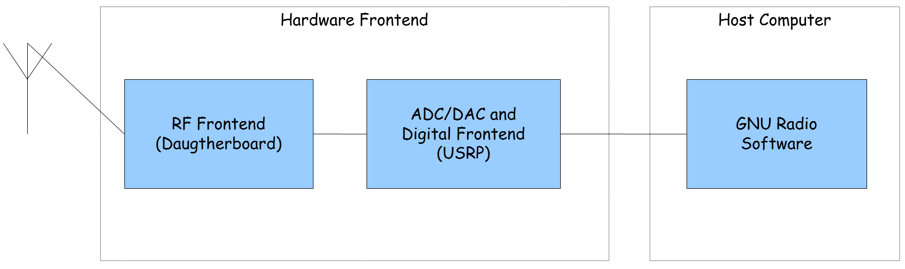 Software toolkit for signal processing
- Software radio construction
- Rapid development
USRP (Universal Software Radio Peripheral)
- Hardware frontend for sending and receiving waveforms
GNU Radio Software
Opensource software (GPL)
- Don't know how something works? Take a look!
- Existing examples: 802.11b(Wi-Fi), ATSC (HDTV), OFDM, DBPSK, DQPSK
Features
- Extensive library of signal processing blocks (C++/ and assembly)
- Python environment for composing blocks (flow graph)
GNU Radio Hardware

Sends/receives waveforms
USRP Features
- USB 2.0 interface (480Mbps)
- FPGA (customizable)
- 64Msps Digital to Analog converters
- 128Msps Analog to Digital converteres
- Daughterboards for different frequency ranges
Available Daughterboard（子插件）
- 400-500Mhz, 800-1000Mhz, 1150-1450Mhz, 1.5-2.1Ghz, 2.3-2.9Ghz
Software Defined Network

Convergence（汇合） of Processing (Compute) and programmable logic
- Convergence of control and management traffic
- Customized features, functions & processing
- TCP, Security, compression/de-compression, Application Offload processing
- Programmable networking
- Network Analytics & I/O management
Integrated Carrier Ethernet Solutions -- NIDs

Fully Integrated Carrier Ethernet NID Solution in a single chip
- Xilinx & Partner IP Delivering unparalleled integration
Future Networks: a Programmable Network ?

Several solutions and Terminologies

SDN: Software-Defined Networking
- Introduced by the New initiative ONF and recently by ITU-T SG 13 Future Networks
- Under discussion at IETF as Network Programmability (or Software-Driven Networks )
Self Organizing & Autonomic Networks
Network resources and policy controller
Network Virtualization & slicing
Cloud Network & Network as a Services
…. Smart Ubiquitous & Distributed Services, Information-Centric Networks….
Opportunity for telecom operators:
- To hide network complexity by abstraction layer
- Improve “Dynamically” network Management ‘Programmability’ & performance
- Ability to deliver “On demand” network resources
…And some use cases: Bandwidth On Demand, Network virtualization , Policy control, Chained Business services , Cloud Network, NaaS, Traffic Offload…
OpenFlow Switching : how it works?

OpenFlow is based on an L2-L4 switch, with an internal flow-table, and a "standardized" interface to add and remove flow entries.
New actions can be done on packet.
- Large modifications of fields.
- Routing on new criteria : L4, mix
- Define network slice on flow criteria …
- New routing protocol : multipath, load-balancing
Xilinx Zynq-7000
Processors and Programmable
Processors (single- and multi-core) are invaluable
- And in any case, are a much harder ossification to address
But one shouldn’t ignore everything else
- If they have better characteristics, e.g., faster, lower power, deterministic
Integration of technologies and of programming is the key, e.g.:
- Software deceleration: Processor helps the programmable logic
- Hardware acceleration: Programmable logic helps the processor
Wide Breadth of Applications Addressed
- Carrier Ethernet Based Access Devices
- Mobile backhaul
- SDN (Software defined networking)
- BMC (base board management controller)
- Client security
- Appliance / Gateways
- SSD controllers
- Low powered servers
- NIDs
LAB5
Lab5-1 Interesting Self-evaluation using Github
Group collaboration
Each group in charge of one directory
Concurrent coding
- Add your information in group_score
.c - Unit test
- Git commit
- Git push
- Integrated test
- Add your information in group_score
Unit test
Test in group local directory
xxxxxxxxxx$ cd hust_group?$ make./group?_score# Shoud print all group member name and scoresGit commit
Git push
Integrated test
Git pull
Make clean
Make
Make test
Open the score_record.txt in
MS Excel/LibreOffice Calc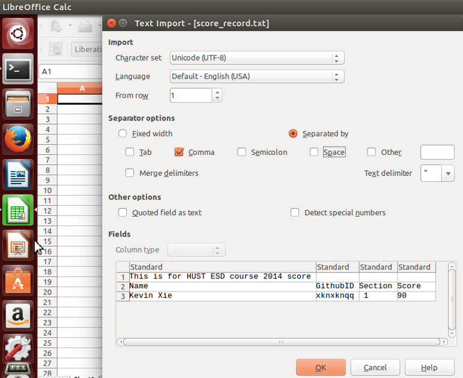